총 누적 수익
324원
쿠파스 324원(클릭 27·구매 1) · 쇼피·토스·크몽·스토어 0원 · 스마트스토어 1호 판매중
Overview · 2026-11-28 15:10 KST
사이트에서 직접 확인한 실측값만 담았습니다. 집계 주기상 아직 반영되지 않은 항목은 미집계·확인 대기로 표기했습니다.
324원
쿠파스 324원(클릭 27·구매 1) · 쇼피·토스·크몽·스토어 0원 · 스마트스토어 1호 판매중
83,159회
30일 +6,478회(76,681 → 83,159 · 11/28 14:08) · 조회한 사람 67,608 · 반응 460 · 팔로워 33명(순 +9) · 11/28 4건 게시(09:02 ABC주스 263·12:01 키친타올·13:21·14:07 블로그 카드) · 07:15 던킨 405회
DgRd1r6E2FD+DgRd6ipE3Fm) · 07:15 던킨 405회 · 쿠파스 클릭 27·구매 1·매출 ₩10,800·수익 324원(11/28 12:05 파트너스 리포트) · 인1 13:23 피클 초대 댓글 4건224492607716·224493001754) · 30일 76,681회·팔로워 31명은 12:00 인사이트 값 유지DgMcNpck3WZ · 15:18 첫 댓글)181) · 30일 64,980(10:48)187 · @ceomimi43 답글)DgD27a0k6Qw·첫 댓글 DgD3D5cEy8j · 17:48 676회 · 오늘 최고) + 09:03 토스 ① 널담 베이글(DgEDBofE5Hb · 본문 91자·무링크·무이미지·무상품명 · 09:20 첫 댓글 DgEFEjqk1KZ 즉시 부착 · 쉐어링크 toss.shopping/_m/rp5EKWE2+공정위 문구 · 17:48 150회) + 09:34 주간 커피 할인 총정리(DgEGiZAkz-L · 요약 카드 1장·외부 URL·[광고] 없음 · 17:48 60회) + 12:05 쿠파스 ① 홈플래닛 LED 모니터 조명(28,500→16,730원 41%↓ · DgEXzKSE8IS·첫 댓글 DgEX87qE3Yy · 단축 iT4qPTN6Bw · 17:48 14회 — 오늘 최저) + 15:47 토스 ③ 쥬르본 모나카(18,000→7,900원 56%↓ · DgExOj7EzaG·첫 댓글 DgExX4kE91m · 쉐어링크 toss.shopping/_m/tjbuLnwv · 17:48 74회) + 18:15 쿠파스 ② 애니클리어 미니 조약돌 손난로 보조배터리(12,310원 · DgFDZM-k3yV · 첫 댓글 DgFDhgqExeJ · 단축 iUvKRREnyC · 텔레그램 125)127)120)DgFoXSekzTX·첫 댓글 DgFodrYk3nA · 텔레그램 135) → 11/23 7건 완료322개
8개국 322·위반 0·심사 0 · 11/28 14:48 집 PC 갱신 방문 2(PH·TH 각 1)·PV 2·클릭 0·주문 0 · 부스트 40/40(08:24 → 12:25 갱신·0원 · 다음 해제 16:25)
ok · 8/8개국 정상 · dashboard.filled_at 14:48ok(만료 시에만 3계정 백업 재개)97,924→144,000₫) · 번들딜 35→12종 · 원가 미확인 7종(53171577568 등) 보류(사용자 결정 대기)1795706228·1795706232·1795706235·1795706239SYG Follow $2 min20 구버전 Expired 처리(21:22~21:26 · $2 min12만 유지) · 다이소 57종·69매장 감시 집 PC 이관 완료(본체 09:30 감시 paused)224) → 해제 17:48~17:51 KST · 16:00 정규 회차는 빈 슬롯 없어 무실행, 17:52 이후 보충 예정1795652150~1795652184)1795618448~1795618474) · 22:00 값과 변동 01795565537~1795565569)56221950415 미끼가 적용 — NT$349 → NT$299(00:38~00:41 · 6% 바우처 SYGLNEW06 대상에서 제외 8→7 · 번들딜 41/41 복원 · 마진 +4.7%)SYG Follow 20/300 + SG Shopee Video 5편 + 쇼츠 5편 3개국어 키워드(00:13~00:31 · 전부 0원)1795531892~1795531921)syglobalwl Smart Voucher ON — 쇼피 100% 부담(23:45 · 셀러 지출 0원 · 광고 크레딧 0원)1795523505~1795523531)1795512677~1795512688 · 17:36 인1 쇼8은 TH 방문 1·uv 1·pv 1 외 7개국 0)151) → 해제 20:33~20:35 KST(20:00 인2 회차는 해제 직후)SYGLNB15 S$15 이상 S$1.50 OFF · TW SYGLNB25 NT$300 이상 NT$25 OFF · MX SYGLNB30 MX$400 이상 MX$30 OFF · 각 50매 · 0원)@sy_global 고급 기능 최종 승인(09:00 인1 실측 — '3. 고급 기능 = 사용 설정됨' · Shorts 2편 설명란 TW·SG 링크 클릭 가능 확인)4건
1~4호 등록 — 3호 판매중 · 4호 승인 대기(#881141 품절 재입고 가격알림 텔레그램 EXE 29,000원 · 11/27 13:43 제출) · 총 4/100 · 자동응답 ON(3/5) · 프로필 80% · 비즈머니 3,910원(클릭업 중지)
#881141 품절 재입고 가격알림 텔레그램 프로그램(EXE) 29,000/129,000/246,000원 · 13:43 최종 심사 제출 → 총 4/100·승인 대기 1 · 1~3호는 판매중 유지신입 저장(크몽에 1년 미만 선택지 없음 · 학력 크몽대학교는 UI 예시로 실제 등록 아님) · 자동응답 3건(문의 접수·작업과정·수정요청) ONmy-gigs · #873653 19,000원~ · #872595 9,000원 · #868582 19,000원) · seller/dashboard 진행 주문 0·11월 수익 0원·평균 객단가 0원·응답률 0%·등급 NEW · 비즈머니 3,910원 · 자동응답 ON·템플릿 3/5 노출 중 · 프로필 80%(프로필·인증·서비스·자동응답 4항목 완료 · 루키 지원금 최대 2.5만 원 23일 남음)엑셀 70노출·4클릭 / 엑셀 템플릿 24·0 / 카테고리 15·0 · 15:00 36노출·0클릭에서 +73노출·+4클릭) · 잔액 3,910원(보너스 10,000원의 39.1%)#335426 1·2호 연결 완료 → 편집승인중(00:40~00:45 · 1호 #868582·2호 #872595 연결·저장 · 3호는 관련성 낮아 미연결 · 심사 약 7영업일 · #337682는 승인 대기 유지)엑셀 27 / 엑셀 템플릿 5 / 카테고리 4, 클릭 전부 0) · 비즈머니 10,000원 그대로(보너스 적립분 · 만료 2027-05-19)#337682·#335426)이 화면상 승인 대기로 표시엑셀·엑셀 템플릿 · 12/01까지 · 추가 결제 0원#337682 포함 전 건 승인 · 23:50 백업 회차 재조회 0회 · 승인 전 0 · 진행 주문 0 · 비즈머니 10,000원 · 등급 NEW)103건
진행 중 매일 11:30 자동 · 누적 103건(기존 70 + 유선정 님 전달 49건 반영 · 피비서 공유) · 제외 24건 · 11/28 정기 11:30
pc_survey_candidates.json 우선)scheduled-actions/🎁-공공기관-기프티콘-설문-응모/notes.md 대조) · 다음 정기 11/28 11:30history.json 22:06 집계 · 11:37~11:46 KEITI·코레일·광주교통공사·국립원예특작과학원 / 22:04~22:05 경주APEC기념공원·국립해양박물관)history.json 재집계 — 누적 47건·제외 16건 변동 0(마지막 갱신 11/24 11:47 · 다음 정기 회차 11/25 11:30)work/survey-auto/history.json 집계)기존 승인 10건 유지 · 거부 3D 10건은 사용자 직접 삭제 완료신규 2D 실용 스티커 20종 심사 대기 20/20(11/23 23:37 제출)사용·수익 0건어도비 스톡 기존분 종료(대기 1건 반려)다음 확인 11/30 10:00
syglobaljp
정예 1~5호 전부 販売中(5호 1224104483 승인 완료)1호 대표이미지 흰 배경 교체 → 画像の修正 0건 완전 해소타임세일 3% 4구간(11/26 17:00~11/27 24:00 · 20건) + SHOP쿠폰 5%(405329 · 2,500엔↑ · 11/26~12/26) 라이브최대 중첩에도 최저 ¥2,746 > 손익분기 ¥2,130 → +¥616 흑자유튜브 일본어 쇼츠 1~5호 전편 완료(5호 LCTJZIXaXPI · 고정 댓글 직링크)1호 일본 63/110 = 57.3%(시청시간 70.5%) · 3호 264뷰 급증(11/27 20:36 실측 · 지역 배정 오늘 저녁 재확인)입점 서류 提出書類の確認進行中 · 결과 확인 12/02 10:00
회원 계정은 cbseng18@gmail.com(로그인은 vault qoo10.jp 저장분 사용), 샵 이름 SY GLOBAL·셀러 ID syglobaljp입니다. 상품 5종은 11/26에 등록을 마쳐 전원 販売中이고, 남은 것은 결제대행사 입점 심사뿐입니다. 1호 K-キャラクター 다꾸·탑꾸 스타터 세트 ¥3,280(정상 순익 8,558원·30.9%) · 2호 한국 다이소 산리오 문구 8점 세트 ¥2,980(6,330원·25.2%) · 3호 K-POP 라이브 참전 풀키트 6종 ¥2,980(9,330원) · 4호 K-스터디 집중 5종 ¥3,280(10,558원) · 5호 K-폰꾸 5종 ¥3,480(10,044원)까지 5세트 패키지·대표 이미지 완비. 대표 이미지는 1호만 흰 배경(#FFFFFF·테두리 4% 순백 보정)으로 교체해 수정 요구가 0건이 됐고, 나머지 4호는 AI 생성 임시본이라 첫 주문 뒤 실물 촬영본으로 교체합니다. 상품 5종은 이미 販売中이고 입점 서류심사(提出書類の確認進行中)는 결제대행사 단계로 약 7일 더 걸립니다 — SHOP쿠폰의 고객용 '쿠폰 받기' 버튼은 그 심사가 끝나는 12/02 이후 노출됩니다(큐텐 탭에 라인업·순익 표).
syjungsanlab
가입 승인 11/27 17:32 · 고객확인(KYC) 18:50 심사완료1호 상품 9,900원 판매중(13901646552 · 재고 999 · 배송비 0원)완제품 엑셀 v1 수식 1,936개 오류 0 · 교차검산 358항목 일치181q2w3e4r@naver.com 메일 연결 · 1시간 주문·검수 감시 가동네이버쇼핑 비노출 — 운영기준 위반 의심상품 검수(최대 3영업일 · 12/2경)
판매자 유형은 사업자(간이과세자) 에스와이글로벌(769-72-00649), 정산계좌는 카카오뱅크입니다. 카테고리 디지털/가전 > 소프트웨어 > 사무/회계(50001514)에서 배송없음이 거부돼 직접배송(화물배달)·배송비 0원으로 등록하고 상세에 파일 전달형·청약철회 제한을 고지했습니다. 네이버쇼핑 신규 검수 노출중단 상태라 해제되면 인1이 바로 공유합니다. 첫 유료 결제(9,900원) 주문이 오면 사용자·피비서에게 알립니다.
C:\sy_auto\sy_auto_watch.py · 크레딧 0원 · 텔레그램 sy global
뽐뿌 핫딜 30분 감시다이소 57종 온라인 60분(쇼피 30 · 큐텐 24 · 1081270)공릉1동 10km 69개 매장 오프라인 전수 09:30부이 부이_조사함 시트 새 줄 → 출처 URL 생존 검증 → 텔레그램텔레그램 명령 /상태·/재고·/전수재고·/핫딜·/시트피비서 원격 제어 pc_cmd.json · 크롬 원격 데스크톱 집컴
승용 님 집 PC에서 도는 무료 자동화입니다. 감시·검증은 집 PC가 하고, 판단·보고는 피비서가 맡는 구조라 크레딧 소모가 0원입니다. 이관에 따라 본체의 📦 쇼피 다이소 전수 재고 양방향 감시(매일 09:30) 액션은 paused로 정지했고, 부이 조사 결과는 부이_조사함 시트에 쌓입니다(11/26 첫 9줄 — 블로그 키워드 3 · 설문/퀴즈 3 · 유행템 3).
sy global로 제목·가격·링크를 보냅니다.1081270의 온라인 재고를 60분마다 확인합니다.부이_조사함에 적은 출처 URL이 실제로 살아있는지 집 PC가 확인하고 진짜만 텔레그램으로 보냅니다./상태·/재고·/전수재고·/핫딜·/시트로 폰에서 바로 조회·실행합니다(정해진 안전 명령만 반응).pc_cmd.json으로 피비서가 명령을 넣고, 급하면 폰 크롬 원격 데스크톱 집컴으로 직접 들어가 조작합니다.pc_stats.json
집 PC(sy_auto_watch.py)가 sy-dashboard의 pc_stats.json에 dashboard 키만 따로 올리고, 이 카드가 페이지를 열 때 그 값만 읽어 표시합니다. 이 블록 밖의 전략·메모 영역은 자동 갱신 대상이 아닙니다.
2026-11-28 15:10 인2 정규 경량 회차 — 스레드 30일 83,159회·팔로워 33명 · 블로그 카드 2편 포함 4건 게시 · 쿠파스 수익 324원 · 쇼피 8개국 방문 2 · 큐텐 5호 구성 5종 교체 완료
1224104483 구성 5종 교체 완료 — 販売中·画像の修正 0건 · 1~5호 전부 판매중2026-11-28 09:15 인1 정규 회차 — 쇼피 8개국 실측(방문 2) · 집 PC 부스트 40/40 · 큐텐 쇼츠 1호 일본 57.3% · 스마트스토어 1호 판매중
13901646552) · KYC 심사완료 · 네이버쇼핑 비노출 검수동기화 — 2026-11-27 15:15 인2 정규 경량 회차(스레드 77,978회 · 11/27 4건 게시 · 쿠파스 클릭 24 · 쇼피 12:00 부스트 40/40 · 피클 초대 누적 107건)
DgOJ5rok5Un · 구어체 2줄·무링크·무이미지) · 09:00 청우 초코파이 찰떡 8,400원 152회(DgOWQlCk7Ov+DgOWazek-jc · 쉐어링크 toss.shopping/_m/ZQRTJqmv) · 09:4x 건강검진 12/31 마감(인1) 108회 · 12:04 쿠파스 ① 페리오 뉴 후레쉬 알파 치약 170g×3 3,750원(35%↓ · 개당 1,250원 · 10g당 73원 · 상품평 84,923·평점 5.0 · DgOq6cBk8QC+DgOrGfLE4FV · 단축 i0HuiVDtQa).2026-11-27 09:14~09:17 인1 정규 회차 — 쇼피 8개국 실측 · 부스트 40/40 확인 · 큐텐 5/5 유지 · 블로그 원고 3편 발행 대기
405329) 유지rss.blog.naver.com/sy_global-.xml 1회), 크몽·스레드·큐텐 접속 0회, 스크린샷 0장입니다.1795738456~1795738494) — SG·TW·VN·TH·BR·MX 0, MY 방문 1·PV 1, PH 방문 1·PV 1, 상품클릭·주문·매출은 전부 0입니다(BR·MX는 현지 11/26 저녁 값).code:0 40회, 유료 0원) 확인, 09:1x 재조회 SG 5/5(쿨다운 10,092초)·MX 5/5(10,225초) → 해제 12:03:39~12:06:28, 12:00 정규 회차는 빈 슬롯 없음.history.json 재집계 62건 제출(자체 60·피비서 2)·제외 20건.전면 실측 — 2026-11-27 00:15 피비서 전 영역 재세팅(4샵 SG 첫 클릭 6 · 큐텐 5/5 판매중 · 크몽 프로필 80% · 집 PC 24시간 자동화 가동)
Follow $2 min20 Expired · $2 min12만 유지9a7d3b93(11/27 00:12 KST) 위에 4샵 퍼널·크몽 3페이지·스레드 공개 프로필을 직접 열어 확인하고, GitHub Contents API로 푸시했습니다(브라우저는 쇼피 JSON 4회 + 크몽 4회 후 browser_close, 블로그 접속 0회).1795706228·1795706232·1795706235·1795706239) — SG 상품클릭 6(uv 0·pv 0·주문 0·매출 ₩0)으로 11/26 SG 일자 첫 상품클릭이 잡혔습니다(21:58 부스트 판 노출 구간과 겹침 · 아직 주문·매출 0). MY·PH·BR은 방문·PV·클릭 전부 0입니다.SYG Follow $2 min20(SFP-1557544343052288)은 21:22~21:26에 Expired 처리해 신버전 $2 min12(SFP-1562098081996800)만 남겼습니다.1224104483까지 1~5호 전부 販売中, 1호 대표이미지를 흰 배경으로 바꿔 確認が必要な商品 1건 → 0건(画像の修正 해소), 타임세일 3% 20건 + SHOP쿠폰 5% 라이브, 일본어 쇼츠 1~5호 전편 업로드·고정 댓글까지 끝냈습니다.my-gigs 전체 3·판매중 3·승인 전 0, seller/dashboard 진행 주문 0·11월 수익 0원·비즈머니 3,910원·등급 NEW·응답률 0%, 자동응답 ON·템플릿 3/5, 프로필 80%(자동응답·상세 경력 반영분). 잔액이 최소 유지 5,000원 미만이라 클릭업은 충전 전까지 재개되지 않습니다.34.215.0.0/16·35.85.0.0/16 등록 후 HTTP 200 복구, 쿠팡 파트너스는 클릭 21·구매 1·수익 324원(11/26 인1 보고 19는 집계 시점 차).224492607716)·세탁기·보일러 물 빼기(224493001754) 2편 발행으로 총 40편, 11/24~26 4편 색인 회복 확인. 설문은 11/26 KOSIS 통계찾기 100점·11/27 지표누리 5문항 응모로 누적 62건·제외 20건입니다(브리프의 47→49는 11/24~25 값).C:\sy_auto\sy_auto_watch.py 가동으로 뽐뿌 30분·다이소 57종 60분·10km 69매장 09:30·부이 시트 URL 검증·텔레그램 명령·피비서 원격 제어가 모두 크레딧 0원으로 돌고, 본체 09:30 감시 액션은 paused로 정지했습니다. 새 유료 주문·매출·1,000뷰급 바이럴은 없어 알림 없이 기록만 갱신합니다.동기화 — 2026-11-26 15:15 인2 정규 경량 회차(스레드 76,681회 · 11/26 3건 게시 · 쇼피 13:48 부스트 40/40 · 피클 초대 5건)
31f683d0 · 11/26 09:15 KST).DgMF8ZXE2V4 · 텔레그램 221)이고, 15:15 토스 ②는 에브리워터 무라벨 500ml×40개 5,880원(70%)으로 15:17 본문·15:18 첫 댓글이 게시됐습니다(본문 DgMcNpck3WZ · 쉐어링크 toss.shopping/_m/zIw7DpB7 · 조회수 집계 전).@tem_po_catch · 배수구 기름종이 주제 3회차 소통)에 좋아요+답글 처리, 선댓글 0·스팸 경고 0회입니다. 13:23 피클 초대 댓글 5건은 인1 측 완료 공유로 2:1:2 배분·초대장 카드 5/5·173·139·140·153초 간격·텔레그램 223입니다.224)로 해제 17:48~17:51이며, 16:00 회차는 무실행하고 17:52 이후 보충 예정입니다. 퍼널은 09:15~09:16 실측(방문·PV·클릭·주문 0)에서 재측정이 없어 그대로입니다.#335426 편집승인중)이고, 설문은 53건/제외 17건에 11:30 회차 결과 미공유, Qoo10은 서류심사 중(12/02 10:00 확인), 미리캔버스는 승인 10건·2D 20종 심사 대기(11/30 10:00) 유지입니다.동기화 — 2026-11-26 09:15 인1 정규 회차(11/26 첫 조회 8개국 0 · 부스트 40/40 해제 09:40~09:43 · 크몽 클릭업 109노출·4클릭 · 스마트스토어 서류 2/2 심사중)
2fab3c46(11/26 00:11 KST · 요약 탭 Qoo10 카드 정정)이고, 브라우저는 쇼피 realtime_metrics JSON 8회 + get_bumped_product_list 2회(SG·MX)만 열고 닫았습니다(스크린샷 0장). 네이버 블로그·크몽·스레드 접속 0회이고 푸시는 GitHub Contents API 직행입니다.1795652150·1795652156·1795652161·1795652165·1795652168·1795652172·1795652180·1795652184) — SG·TW·MY·PH·VN·TH는 11/26 현지 자정 리셋 후 첫 조회로 방문 0·PV 0·클릭 0·주문 0·매출 ₩0이고, BR·MX는 11/25 저녁 시간대 값이 0으로 남아 있습니다. 11/25 마감은 방문 3(SG 1·VN 2)·PV 3·클릭 1·주문 0이었습니다.엑셀 70노출·4클릭 / 엑셀 템플릿 24·0 / 카테고리 15·0)입니다. 잔액 3,910원이 최소 유지 5,000원 미만이라 00:30 자동 중지됐고(노출 스위치 OFF · 종료일 26.12.01), 충전 없이는 재개되지 않습니다. 문의 0·주문 0입니다.#335426 연결 — 00:40~00:45에 1호 #868582·2호 #872595 두 서비스에 연결·저장했고(3호는 관련성 낮아 미연결) 상태가 편집승인중(심사 약 7영업일 · 그때까지 기존 버전 노출)으로 바뀌었습니다. #337682는 승인 대기 유지입니다. 지원금 2만 5천 원은 현금이 아니라 비즈머니 1만 원(기수령) + 루키 광고 할인 합산이라 유료 결제 없이 종료했습니다.심사중입니다(3영업일 이내 · 메일·SMS 통보 · 심사 중에도 상품 등록 가능). 스토어명 SY정산랩·주소 smartstore.naver.com/syjungsanlab입니다.提出書類の確認進行中 그대로이고 12/02 10:00 결과 확인 예약, 매일 10:00 게이트 감시가 돌고 있습니다. 1~5호 패키지·일본어 쇼츠 5편은 게시 대기 상태로 유지됩니다.history.json 재집계 53건/제외 17건 변동 0(다음 정기 11/26 11:30), 미리캔버스 승인 10건·2D 20종 심사 대기(11/30 10:00)·어도비 스톡 기존분 종료, 블로그는 접속 0회로 38편·11/25 방문 71명·누적 1,033 유지입니다. 첫 유료 주문·매출·크몽 승인·1,000뷰급 바이럴이 없어 사용자 알림 없이 기록만 갱신합니다.동기화 — 2026-11-25 23:55 인1 대타 회차(23:30 피비서 미반영 · 쇼피 23:54 8개국 방문 3·클릭 1 · 스레드 72,197회 · 설문 53건 · Qoo10 입점 서류 제출)
0d75d154 · 11/25 15:17 KST = 인2 15:15 회차) 인1이 대타로 갱신했습니다. 브라우저는 쇼피 realtime_metrics·get_bumped_product_list JSON 16회만 열고 닫았고(스크린샷 0장), 네이버 블로그·크몽·스레드 접속 0회이며 푸시는 GitHub Contents API 직행입니다.1795618448~1795618474) — SG 방문 1·PV 1, VN 방문 2·PV 2·상품클릭 1, TW·MY·PH·TH·BR·MX 0으로 오늘 합계 방문 3·PV 3·클릭 1이고 8개국 주문 0·매출 ₩0입니다. 22:00 조회와 변동 0이며, SG가 17:45 0에서 21:58 방문 1로 찍힌 뒤 그대로입니다.DgKylACE9ka·첫 댓글 DgKyvFWk3YI · 텔레그램 204), 18:15 문풍지부터 무이미지 생활 함정형 100%로 전환했습니다. 피클 초대 댓글은 13:23 5건 + 20:19 5건 = 10/10 완료, 쿠팡 파트너스는 클릭 21·구매 1건·수익 324원(11/25 기준)입니다.SY정산랩) — 15:00 실측에서 2호 클릭업 노출 36회·클릭 0회·소진 0원(11:00 21회 → +15), 비즈머니 10,000원 유지입니다. 서비스 1·2·3호는 전부 판매중(#868582 19,000원 · #872595 9,000원 · #873653 19,000원~), 포트폴리오 2건(#337682·#335426)은 화면상 승인 대기, 진행 주문 0·11월 수익 0원입니다.sy_global-는 22:01 공개 위젯 기준 오늘 방문 71명·누적 1,033, 총 38편(11/25 09:40 스타벅스 e-프리퀀시 발행)이고 애드포스트는 운영기간 30일 미만으로 보류(12월 중순 재검수)입니다. 경품 설문은 오늘 6건 추가(KEITI·코레일·광주교통공사·국립원예특작과학원·경주APEC기념공원·국립해양박물관)로 누적 53건·제외 17건, 미리캔버스는 사용자가 거부 3D 10건을 직접 삭제해 승인 10건만 유지·신규 2D 20종은 심사 대기 20/20(11/30 10:00 확인)입니다.提出書類の確認進行中이고, 12/02 10:00 심사 결과 확인과 매일 10:00 등록 게이트 확인을 예약했습니다. 1호 다꾸·탑꾸 ¥3,280·2호 산리오 문구 ¥2,980·3호 K-POP 키트 ¥2,980 패키지를 준비했고(대표 이미지는 AI 임시본), 사업자 입점이 승인되기 전에는 상품등록 화면이 열리지 않습니다.sy global 텔레그램에는 1줄 보고만 올립니다.동기화 — 2026-11-25 15:15 인2 정규 회차(스레드 30일 66,984회·팔로워 31명 · 쇼피 부스트 12:00 13:16 40/40 · 블로그 원고 3편+이미지 9장 전달)
181). 13:23 피클 초대 댓글 5건은 2:1:2 배분·146~275초 간격으로 게시해 노출과 초대장 카드 생성까지 확인했습니다(텔레그램 187).186)로 이어졌고 다음 해제는 17:18:45~17:20:39 KST입니다. 인1 요청대로 오늘 16:00 인2 정규 회차는 17:21 이후에 실행합니다.reports/blog-drafts-2026-11-25.md · work/blog-images/2026-11-25/). 임시저장·발행은 사용자 직접 처리이고, 11/24 원고 중 FC서울 1편은 발행 완료·결로·종합소득세 2편은 대기입니다. 조회 통계는 11/22 마감 84회 유지(11/23~25 미집계).동기화 — 11/25 09:10 인1 정규 회차(11/25 첫 조회 8개국 0 · TW A안 NT$299 미끼가 · MX Follow Prize · 부스트 밤사이 3판)
SYG Follow 20/300 · SG Shopee Video 5편bf5c5d0f(11/25 00:25 KST = 쇼피 한글 카탈로그 추가분)이고, 브라우저는 쇼피 realtime_metrics JSON 8회만 열고 닫았습니다(스크린샷 0장). 네이버 블로그·크몽·스레드 접속 0회이며 푸시는 GitHub Contents API 직행입니다.1795565537·1795565544·1795565548·1795565553·1795565558·1795565561·1795565565·1795565569) — SG·TW·MY·PH·VN·TH·BR·MX 전부 방문 0·PV 0·상품클릭 0·주문 0·매출 ₩0입니다. 11/25 현지 자정 리셋(SG·TW·MY·PH 08시대 · VN·TH 07시대 · BR·MX는 현지 11/24 저녁) 뒤 첫 조회이고, 11/24 마감은 방문 4(TW·PH·VN·TH)·PV 5·클릭 1·주문 0이었습니다.179), 해제는 13:13~13:16입니다. 따라서 12:00 정규 회차는 슬롯이 차 있어 실행 불가이고, 실제 재장전 가능 시점은 13:13 이후입니다.56221950415를 NT$349 → NT$299로 내렸습니다(00:38~00:41). 번들딜이 가격을 잠그고 있어 3분만 번들딜에서 제외했다 41/41로 복원했고, 6% 바우처 SYGLNEW06 대상에서 제외(8→7종)해 역마진을 막았습니다. 마진은 +4.7%(+570원/건), 번들 2개 구매(3% 할인) 시 +2.2%이고 12/11 TW 수수료 인상 후에도 +2.9%로 남습니다.SYG Follow 20/300(MX$20 OFF / MX$300 이상 · 100매 · 00:27~2027-02-23 · id 22700713)을 새로 걸었고, SG(SYG Follow $2 min20)·TW(Follow Prize 20)는 기존 유지입니다. 같은 회차에 SG Shopee Video 5편을 상품 태그 1개씩 달아 게시했고(TW·MX·VN은 기능 자체 미개방), 쇼피 쇼츠 5편 설명란 3개국어(EN·번체·ES) 키워드를 5/5 저장했습니다(00:13~00:27 · 설명 1,123~1,272자 · 기존 직링크·바우처 문구 무손상).DgINXi3k9f7 · 첫 댓글 DgINgfbExUs · 단축 iWxRvH872W · 텔레그램 168)로 5건 마감입니다. 오늘부터 사용자 지시대로 글당 1만 뷰 목표로 4줄 일기형을 폐기하고 첫 줄 후킹 + 이미지 1장 정보형으로 갑니다.#868582 19,000원 · #872595 9,000원 · #873653 19,000원~)와 포트폴리오 #337682 전 건 판매중 유지(이번 회차 재조회 0회)이고, 2호 클릭업(CPC) 첫 노출·클릭은 오늘 집계로 확인 예정입니다(보너스 비즈머니 10,000원 한도 · 클릭 상한 1,600원 · 12/01까지 · 추가 결제 0원).work/survey-auto/history.json 재집계로 누적 47건 / 제외 16건 변동 0(다음 정기 회차 11/25 11:30 · 강원권통일플러스센터 발표 공지는 09:10 기준 미게시라 11:30에 재확인)입니다. 미리캔버스는 2D 스티커 20종 심사 대기 20/20(11/30 10:00 확인) 유지, 어도비 스톡 대기분 1건은 반려 상태 그대로입니다.동기화 — 11/24 23:50 백업 대타 회차(23:30 피비서 미반영 · 23:51 8개국 방문 4·클릭 1 · 쇼츠 5편 고정 댓글 · TW 스마트 바우처)
833e124c · 11/24 21:33 KST = 21:30 백업분) 인1이 23:50 대타로 갱신했습니다. 브라우저는 쇼피 realtime_metrics JSON 8회만 열고 닫았고(스크린샷 0장), 네이버 블로그·크몽·스레드 접속 0회이며 푸시는 GitHub Contents API 직행입니다.1795531892·1795531896·1795531902·1795531906·1795531909·1795531913·1795531917·1795531921) — TW 방문 1·PV 1, PH 방문 1·PV 2·상품클릭 1, VN 방문 1·PV 1, TH 방문 1·PV 1, SG·MY·BR·MX 0으로 오늘 방문 4·PV 5·클릭 1입니다. 8개국 주문 0·매출 ₩0이고, 21:32에 0이던 TW·VN에 첫 방문이 잡혔습니다(클릭은 PH 1건 그대로).syglobalwl Smart Voucher를 23:45에 ON했습니다(쇼피 100% 부담 · 셀러 지출 0원 · 광고 크레딧 0원 · 중간에 생성된 유료 캠페인 1건은 즉시 Stop Ads로 Ended, 지출 0원). TW 소액 광고는 결제 전 중단했습니다(등록 카드·광고 크레딧 0원 · 수동 키워드 없음 · 3일 약 2.8만 원 소요 추정).@sy_global에는 국내 쿠파스 쇼츠 2편(고무장갑 35pO-Dzr94o · 손난로 B8N7-9PhAGM · 22:59 공개)이 올라가 있고, 30일 52,467회·쿠파스 클릭 19·구매 1·수익 324원은 이번 회차 재측정 없이 유지입니다.#872595(9,000원)에 클릭업(CPC) 광고를 23:18 세팅했습니다: 보너스 비즈머니 10,000원 한도 내(추가 결제 0원) · 클릭 상한 1,600원 · 키워드 엑셀·엑셀 템플릿 · 12/01까지. 이번 회차는 크몽 재조회 0회로 1·2·3호와 포트폴리오 #337682 전 건 판매중(리뷰 0·진행 주문 0·11월 수익 0원) 유지입니다.work/survey-auto/history.json 직접 집계로 누적 47건 / 제외 16건 유지이고 강원권통일플러스센터 발표 공지 미게시(11:45·11:56·21:30 확인 · 11/25 다시 확인)입니다. 다음 정기 회차는 11/25 11:30입니다.sy_global-는 11/24 원고 3편+이미지 9장 발행 대기·재색인은 11/17까지만 반영된 상태 그대로이고 이번 회차 접속 0회입니다.동기화 — 11/24 21:30 백업 대타 회차(21:10 피비서 미반영 · 21:31 8개국 PH·TH 방문 각 1 · 20:20 부스트 40/40)
095824aa · 11/24 20:55 KST = 미리캔버스 탭 추가분) 인1이 21:30 대타로 갱신했습니다. 브라우저는 쇼피 realtime_metrics JSON 8회만 열고 닫았고(스크린샷 0장), 네이버 블로그·크몽·스레드 접속 0회입니다.1795523505·1795523510·1795523514·1795523517·1795523521·1795523524·1795523527·1795523531) — PH 방문 1·PV 2·상품클릭 1, TH 방문 1·PV 1이고 SG·TW·MY·VN·BR·MX는 0입니다. 8개국 주문 0·매출 ₩0이며, 18:31 4샵 조회(전부 0) 대비 PH·TH에 오늘 첫 방문이 잡혔습니다.#868582 19,000원 · #872595 9,000원 · #873653 19,000원~)와 포트폴리오 #337682까지 전 건 승인·판매중 유지이고 리뷰 0·진행 주문 0·11월 수익 0원입니다.work/survey-auto/history.json 직접 집계로 누적 47건 / 제외 16건 유지이고, 강원권통일플러스센터 발표 공지 미게시(11:45·11:56 확인 · 21:30 재확인 · 11/25 다시 확인)입니다. 다음 정기 회차는 11/25 11:30입니다.sy_global-는 11/24 원고 3편+이미지 9장 발행 대기(08:58 인1 당번 · 재색인은 11/17까지만 반영 · 11/25 10:00 재확인)이고, 미리캔버스 신규 2D 스티커 20종 심사 대기 20/20(11/23 23:37 제출 · 다음 확인 11/30 10:00) 그대로입니다. 첫 유료 주문·매출·크몽 승인·1,000뷰급 바이럴이 없어 사용자 알림 없이 기록만 갱신합니다.동기화 — 11/24 18:30 백업 대타 회차(18:10 인2 미반영 · 쇼피 4샵 유입 0 · 18:15 쿠파스 ② 게시)
be613e56 · 11/24 15:35 KST) 본체가 18:30 대타로 돌렸습니다. 브라우저는 쇼피 JSON 4회 + 크몽 2회(my-gigs·seller/dashboard) = 6회 열람 후 즉시 browser_close, 스레드는 공개 프로필 web_fetch 1회(18:31), 네이버 블로그 접속 0회입니다.1795512677·1795512681·1795512684·1795512688) — SG·MY·PH·BR 모두 방문 0·PV 0·상품클릭 0·주문 0·매출 ₩0입니다. 15:31 조회와 변동 0이고, 11/24 현지 자정 리셋 뒤 17시간 넘게 유입이 없습니다.msg 151)을 채워 20:33~20:35 KST 해제 예정입니다. 20:00 인2 회차는 해제 직후 실행 대상입니다. 같은 노출 구간의 17:36 인1 쇼8 경량 실측은 TH 방문 1(uv 1·pv 1) 외 7개국 0으로 클릭 0이었습니다.DgHnZxpk7mM + 첫 댓글 DgHnhVPEyf6(단축 link.coupang.com/a/iWaawrWZwq+공정위 문구)로 올려 18:31 공개 프로필에서 12m·11m 표기를 확인했습니다 → 11/24 4건. 조회수는 아직 미측정이고, 15:15 토스 ② 슬롯은 여전히 비어 오늘 7슬롯 중 4건입니다.my-gigs 전체 3 · 판매중 3 · 승인 전 0 · 비승인·판매중지 0(#873653 19,000원~ · #872595 9,000원 · #868582 19,000원)이고, seller/dashboard도 진행 주문 0건 · 11월 수익 0원 · 평균 객단가 0원 · 비즈머니 10,000원 · 등급 NEW · 응답률 0% · 프로필 60%이며 ‘첫 판매를 위한 준비를 마쳤어요’ 화면이 그대로입니다(재구매 고객 마지막 업데이트 26.11.23 09:03).동기화 — 11/24 15:30 백업 대타 회차(15:10 인2 미반영 · 쇼피 4샵 유입 0 · 스레드 11/24 3건)
27080804 · 11/24 12:14 KST) 본체가 대타로 돌렸습니다. 브라우저는 쇼피 JSON 4회 + 크몽 my-gigs 1회 = 5회 열람 후 바로 browser_close, 스레드는 공개 프로필 web_fetch 1회, 네이버 블로그 접속 0회(브리프 지침 준수)입니다.1795501897·1795501901·1795501904·1795501908) — SG·MY·PH·BR 모두 방문 0·PV 0·상품클릭 0·주문 0·매출 ₩0입니다. 12:12 조회와 변동 0이고, 11/24 현지 자정 리셋 뒤 15시간째 유입이 없습니다.148 · 인1 12:33 공유)로 슬롯이 다시 만석이고, 해제는 16:29:26(SG)~16:31:37(MX) KST입니다. 15:30 현재 노출은 이어지고 있으나 15:31 실측까지 클릭 0입니다.DgGbs8jk-DH · 첫 댓글 DgGbzjBk4ry) · 09:04 쪽파김치 119회(DgGn4C1E1SR · DgGoLICkw06 · 쉐어링크 toss.shopping/_m/5Rt6EqYh) · 12:03 아보카도 오일 100회(DgG8VofE2JX · DgG8eeqk9DD · 단축 iVIFtEQNI4)이고 외부 댓글은 3건 모두 0입니다. 30일 조회 52,139회(+7,083) · 팔로워 30명입니다.my-gigs 전체 3 · 판매중 3 · 승인 전 0 · 비승인 0 · 판매 중지 0(#873653 19,000원~ · #872595 9,000원 · #868582 19,000원)으로 12:10 이후 변동 0입니다. 리뷰·진행 주문·11월 수익 0원은 21:13 값 유지(seller/dashboard는 이번 회차 미조회).@unjoy.s 님 감사 답글 수신(인1 13:43 공유)도 기록했습니다.동기화 — 11/24 12:10 정규 회차(설문 47건 · 12:12 8개국 유입 0 · 12:29 부스트 재장전 대기)
realtime_metrics) 8개국 8회 호출로 12:11~12:12에 직접 실측했고 브라우저 스크린샷은 0장입니다. 푸시는 GitHub Contents API 직행이며 직전 커밋은 d3f79acb(11/24 09:16 KST)입니다.1795489888·1795489892·1795489896·1795489899·1795489902·1795489905·1795489909·1795489913) — SG·TW·MY·PH·VN·TH·BR·MX 전부 방문 0·PV 0·상품클릭 0·주문 0·매출 ₩0입니다. 11/23 마감(SG 방문 2·PV 2 · MY 1·PV 1) 뒤 현지 자정 리셋으로 새 일자가 시작된 지 11시간이고, 09:18 조회와 변동 0입니다.#337682까지 전 건 판매중이 유지되고 리뷰 0·진행 주문 0·11월 수익 0원입니다.sy global 방에는 1줄 요약을 남깁니다.동기화 — 11/24 09:10 정규 회차(밤사이 부스트 3판 40/40 · 09:18 8개국 방문·클릭 0)
realtime_metrics) 8개국 8회 호출로 09:15~09:18에 직접 실측했고, 브라우저는 그 8회만 열고 닫았습니다(스크린샷 0장). 푸시는 GitHub Contents API 직행이며 직전 커밋은 71842a37(11/24 00:22 KST · 전날 23:50 대타 갱신분)입니다.1795479102·1795479109·1795479113·1795479118·1795479121·1795479126·1795479130·1795479135) — SG·TW·MY·PH·VN·TH·BR·MX 모두 방문 0·PV 0, 상품클릭 0·주문 0·매출 ₩0입니다. 11/23 마감(SG 2·PV 2 · MY 1·PV 1 · TW·MX 0)은 현지 자정 리셋으로 새 일자 0에서 출발했고, 어제 잡힌 SG·MY 방문이 클릭으로 이어지지 않은 채 하루가 끝났습니다.#337682까지 전 건 승인·판매중 상태가 유지되고 있으며 리뷰 0·진행 주문 0·11월 수익 0원입니다.sy global 방에는 1줄 요약을 남깁니다.동기화 — 23:30 피비서 회차 미반영 확인 → 인1 대타 갱신(브라우저 0회 · GitHub Contents API)
e3fef07 21:15 KST → 23:30 피비서 커밋 없음 확인 후 대타 실행).@sy_global — 고급 기능 승인으로 설명란 직링크가 실제 하이퍼링크로 개통된 상태에서 BGM 쇼츠 3편(T4 406a6bqz2wY · S1 hAcJLBI--3M · T3 SsFP4zspOSA · 각 12.00초 · 22:08 공개 확인)을 추가 업로드했고, 같은 3편을 쇼피 상품 상세 영상 11건(T4·S1·T3·A안·S2 · 11~12초 · 1080×1920 · 전 건 'successfully edited' · SG·TW·MX Live 수 변동 0)으로도 올렸습니다.SYGLNB15(S$15 이상 S$1.50 OFF · 22:28 시작), TW SYGLNB25(NT$300 이상 NT$25 OFF · 22:45 시작), MX SYGLNB30(MX$400 이상 MX$30 OFF · 23:00 시작 · New Buyer 메뉴가 없어 Shop Voucher로 저장) · 각 50매 · 비용 0원 · 정가·재고 수정 0건.DgFoXSekzTX(23:47 · 4줄 98자 · 무링크·무상품명) + 첫 댓글 DgFodrYk3nA(단축 iUSPlAQat2 · 링크 카드 · 공정위 문구)로 게시해 11/23 7건이 됐습니다(프로필에서 본문·댓글·카드 노출 확인 · 텔레그램 135). 쿠파스는 18:26 기준 클릭 18·구매 1·매출 ₩10,800·수익 324원이고 토스 쉐어링크 토큰은 재발급 완료(서버 IP 변경분 허용 IP 추가 대기)입니다.1795444951·1795444956·1795444964) — SG 방문 2·PV 2 유지(상품클릭 0), TW·MX 0이고 21:12의 MY 1·PV 1 이후 새 유입은 없습니다. 20:00 인2 판 40/40은 여전히 해제 11/24 00:15~00:18입니다.#337682까지 전 건 승인·판매중 유지(21:13 직접 확인 이후 변동 0 · 진행 주문 0 · 11월 수익 0원), 경품 설문은 오늘 신규 12건·누적 40건으로 내일 11/24 첫 당첨 발표를 기다립니다.동기화 — 크몽 2호 #872595·3호 #873653 승인 완료 → 1·2·3호 전부 판매중(직접 확인)
my-gigs에서 전체 3 · 판매중 3 · 승인 전 0 · 비승인 0 · 판매 중지 0입니다. 2호 #872595(9,000원)와 3호 #873653(19,000원~) 모두 승인 2026.11.23 표기로 판매중 전환됐고 1호 #868582(19,000원)도 판매중입니다(18:29 인1 전언을 화면에서 재확인). seller/dashboard는 등급 NEW · 비즈머니 10,000원 · 11월 수익 0원 · 진행 주문 0건 · 평균 객단가 0원 · 응답률 0% · 재구매 고객 0(26.11.23 09:03 갱신)입니다.126) 다음 해제는 11/24 00:15~00:18입니다.DgFDZM-k3yV + 첫 댓글 DgFDhgqExeJ · 단축 iUvKRREnyC · 텔레그램 125)를 게시해 11/23 6건이 됐고, 18:26 쿠파스 오늘 클릭 18·구매 1·매출 10,800원·수익 324원(쿠팡 파트너스 2차 인증 통과·자동 로그인 세션 저장)을 인1이 확인했습니다. 20:19 피클 초대 댓글 5건도 완료(2:1:2 · @geureonhae·@unjoy.s·@muzie413·@ondal2018·@tommyhouse302 · 135~175초 간격 · 초대장 카드 노출 · 스팸 경고 0 · 텔레그램 127)해 오늘 초대 댓글 10건을 채웠고, 다음 슬롯은 23:45 쿠파스입니다.my-gigs·seller/dashboard·공개 포트폴리오 1회) = 7회 열람 후 browser_close입니다.동기화 — 쇼피 16:00 인2 회차 8개국 40/40 부스트 완료(실패 0 · 유료 0원 · 해제 20:10~20:14)
get_bumped_product_list로 8개국 5/5 재검증 · SG는 우선 배정 신상 5종 55371988987·55072000604·51772020877·56471987776·47522011237 · 쿨다운 14,400초). 유료 Boost·광고 클릭 0건, 비용 0원이고 텔레그램 122로 공유했습니다. 해제는 SG 20:10 · TW 20:11 · MY·PH 20:12 · VN·TH·BR 20:13 · MX 20:14 KST라 20:00 정규 회차는 20:14 이후에 실행해야 합니다(정각 조회 시 8개국 모두 5/5로 보임).@hanvois 님 외 4명·@x._.oheeee·@greeny.mom·@afterwork_cho·@mariinskyeu·@ficrunning·@chiiikuriii)이었습니다.@sabol.kka 제외 유지, 고인 관련 민감 2건(@m1m1_yyz·@heeya794242) 변동 없음, 스팸 경고·댓글 제한·게시 오류 0회.sy_global- · 품질·정책 문제 아닌 운영기간 30일 부족 · 30일이 채워지는 12월 중순경 재검수 요청 예정) · 쿠파스 API 사전 개방 거절(누적 판매 15만 원 달성·최종승인 후 발급)은 종전과 동일합니다.동기화 — 쇼피 4샵 15:11 직접 재실측: SG 첫 유입(방문 1·PV 1)
#868582 19,000원) · 승인 전 2(#872595 9,000원 · #873653 19,000원 · 둘 다 '승인 대기 중 · 영업일 7일 이내') · 비승인·판매중지 0 · 진행 주문 0 · 11월 수익 0원 · 비즈머니 10,000원 · 등급 NEW · 평균 객단가 0원 · 응답률 0% · 프로필 60%(SY정산랩)로 변동 없음.@jingu0_r·@nubeon77 · 인1 1 @greeny.mom · 인2 2 @x._.oheeee·@yjyj6486886 · 13:30→13:34→13:37→13:41→13:45 간격 유지 · '피클 초대장' 카드 노출 검증 · 스팸 경고·댓글 제한 0회 · 텔레그램 120).web_fetch 1회 — 최신은 12:05 쿠파스cbseng 네이버 블로그 전체공개 게시 blog.naver.com/cbseng/224488225274 + 응모 폼 제출) → 오늘 신규 12건 · 누적 40건). 이로써 기존에 '네이버 로그인 필수'로 제외했던 3건(강원특별자치도 SNS · 세종시교육청 · 한국소비자원)이 모두 소진됐습니다.동기화 — 쇼피 4샵 퍼널·크몽 직접 재실측, 변동 0
sales_hourly 1칸).#868582 19,000원) · 승인 전 2(#872595 9,000원 · #873653 19,000원 · 둘 다 '승인 대기 중 · 영업일 7일 이내') · 비승인·판매중지 0 · 진행 주문 0 · 11월 수익 0원 · 비즈머니 10,000원 · 등급 NEW · 평균 객단가 0원 · 응답률 0% · 프로필 60%(SY정산랩)로 변동 없음.DgEXzKSE8IS·첫 댓글 DgEX87qE3Yy · 단축 iT4qPTN6Bw · 인2 12:06 완료 보고 · 텔레그램 118) → 11/23 4건 · 누적 18건.web_fetch 1회 — 12:05 본문 8m·12:06 첫 댓글 6m이 정상 노출됩니다.경 · 12:09 12:00 8개국 40/40 부스트(0원 · 해제 16:05~16:08 · 12:20 백업 스킵).동기화 — 경량 회차(브라우저 0회)
#868582 19,000원) · 승인 전 2(#872595 9,000원 · #873653 19,000원) · 진행 주문 0 · 11월 수익 0원 · 비즈머니 10,000원 · 등급 NEW · 응답률 0% · 프로필 60%로 09:13과 동일.https://www.threads.com/@18.1q2w3e4r/post/DgEFEjqk1KZ) — 쉐어링크 toss.shopping/_m/rp5EKWE2와 공정위 문구, 토스쇼핑 미리보기 카드 정상 노출을 확인했고 조회 113회입니다. 승용 님 지시대로 오늘 남은 슬롯(12:00·18:15·23:45)도 게시 즉시 첫 댓글 링크 부착으로 원복해 무링크 선공개 실험은 종료됐습니다.DgEGiZAkz-L · 폴바셋 DT데이·투썸 조각케이크·빽다방 네이버페이 50%·컴포즈·스타벅스 5종 요약 카드 이미지 1장 + 294자 본문 · 외부 URL·[광고] 표기 없음 · 새로고침 후 본문·카드 노출 검증 완료) → 11/23 발행 3건(07:15 써브웨이 · 09:03 토스web_fetch 1회 —7m 주간 커피 글·38m 토스동기화 — 쇼피 4샵 퍼널·크몽 직접 재실측, 변동 0
#868582 19,000원) · 승인 전 2(#872595 9,000원 · #873653 19,000원 · 둘 다 '승인 대기 중 · 영업일 7일 이내') · 비승인·판매중지 0 · 진행 주문 0건 · 11월 수익 0원 · 비즈머니 10,000원(첫 화면 0원·등급 `-`는 로딩값 → 8초 뒤 10,000원·NEW) · 평균 객단가 0원 · 응답률 0% · 프로필 60% → 08:11과 동일.DgEDBofE5Hb · 09:11 공개 프로필 8m 표기 · 보관 쉐어링크 toss.shopping/_m/rp5EKWE2 · 인2 09:06 완료 보고 · 텔레그램 115) — 11:00까지 조회 200+ 또는 외부 답글 2건+이면 10:37·14:12 댓글 회차에서 링크를 후부착합니다.@sy_global 고급 기능 최종 승인(181q2w3e4r@gmail.com · UCBNj-OHw7wlNmOnGLXzJOXA · '3. 고급 기능 = 사용 설정됨' · Google 계정에서 '이미 인증을 완료했으므로 고급 YouTube 기능을 사용할 수 있습니다' 확인 · Shorts 2편 T8z5bnAt4fc·OyqGIKapwlE 시청자 화면 설명란 TW·SG 쇼피 URL이 클릭 가능한 파란 하이퍼링크로 전환 · 중복 방지용 11:45 확인 회차 정리) — 00:40 회차에 '대기 중'으로 정정했던 상태가 '최종 승인·직링크 개통 완료'로 해소됐습니다.114).동기화 — 경량 회차(브라우저 0회)
#868582 19,000원) · 승인 전 2(#872595 9,000원 · #873653 19,000원) · 진행 주문 0 · 11월 수익 0원 · 비즈머니 10,000원 · 등급 NEW · 응답률 0% · 프로필 60%로 08:11과 동일.DgD27a0k6Qw · 첫 댓글 DgD3D5cEy8j) 글이 1h 표기로 11/23 1건 그대로이고, 다음 슬롯은 오늘 09:00 토스2026-11-23-0807(08:00 부스트 완료 공유) · 인2 최신 2026-11-23-0719(07:15 슬롯 완료)로 08:07 이후 새 폴더 없음(디렉토리 목록 1회 확인).동기화 — 쇼피 4샵 퍼널·크몽 직접 재실측, 변동 0
#868582 19,000원) · 승인 전 2(#872595 9,000원 · #873653 19,000원 · 둘 다 '승인 대기 중 · 영업일 7일 이내') · 비승인·판매중지 0 · 진행 주문 0 · 11월 수익 0원 · 비즈머니 10,000원(첫 화면 0원·등급 `-`는 로딩값 → 7초 뒤 10,000원·NEW) · 평균 객단가 0원 · 응답률 0% · 프로필 60% → 07:12와 동일.sy global msg_id 113) — 04:01~04:05 판이 08:01~08:05에 예정대로 해제되자 인1이 해제 시각에 맞춰 바로 재장전했고, 07:40 회차에 남겼던 '1~5분 겹침 주의'는 해소됐습니다. 다음 해제 12:03~12:06 · 12:00 인1 회차는 해제 직후 진행 · 08:20 상호 백업은 스킵(인1 08:07 공유 수신).DgD27a0k6Qw 54m · 첫 댓글 DgD3D5cEy8j 53m)로 11/23 1건, 다음 슬롯은 오늘 09:00 토스동기화 — 경량 회차(브라우저 0회)
#868582 19,000원) · 승인 전 2(#872595 9,000원 · #873653 19,000원) · 비승인·판매중지 0 · 진행 주문 0 · 11월 수익 0원 · 비즈머니 10,000원 · 등급 NEW · 평균 객단가 0원 · 응답률 0% · 프로필 60%.DgD27a0k6Qw·07:17) + 상세 첫 댓글(DgD3D5cEy8j·07:18) 2단으로 게시했고, 인2 07:19 완료 보고에서 새로고침 후 본문·첫 댓글 동시 노출·줄바꿈 정상·초기 조회 2회·외부 답글 0·텔레그램 112를 확인했습니다(07:16 시작·07:17 중간보고 3건 수신). 07:41 공개 프로필에서도 두 글이 24m·22m 표기로 노출됩니다.2026-11-23-0406) · 인2는 07:16·07:17·07:19 진행/중간/완료 3건.동기화 — 07:11 퍼널·07:12 크몽 직접 재실측, 변동 0
#868582 19,000원) · 승인 전 2(#872595 9,000원 · #873653 19,000원 · 둘 다 '승인 대기 중 · 영업일 7일 이내') · 비승인·판매중지 0 · 진행 주문 0건 · 11월 수익 0원 · 비즈머니 10,000원 · 등급 NEW · 평균 객단가 0원 · 응답률 0% · 프로필 60%(SY정산랩)로 06:12와 동일.web_fetch 1회) — 최신은 여전히 21:15 토스2026-11-23-0406).동기화 — 경량 회차(브라우저 0회)
#868582 19,000원) · 승인 전 2(#872595 9,000원 · #873653 19,000원) · 비승인·판매중지 0 · 진행 주문 0 · 11월 수익 0원 · 비즈머니 10,000원 · 등급 NEW · 평균 객단가 0원 · 응답률 0% · 프로필 60%.web_fetch 1회) — 최신은 여전히 21:15 토스2026-11-23-0406).동기화 — 퍼널 06:11
#868582 19,000원) · 승인 전 2(#872595 9,000원 · #873653 19,000원) · 비승인·판매중지 0 · 진행 주문 0 · 11월 수익 0원 · 비즈머니 10,000원 · 등급 NEW · 평균 객단가 0원 · 응답률 0% · 프로필 60%로 05:12와 동일.web_fetch 1회) — 최신은 여전히 21:15 토스2026-11-23-0406에서 새 폴더 없음.동기화 — 경량 회차(브라우저 0회)
#868582 19,000원) · 승인 전 2(#872595 9,000원 · #873653 19,000원) · 비승인·판매중지 0 · 진행 주문 0 · 11월 수익 0원 · 비즈머니 10,000원 · 등급 NEW · 평균 객단가 0원 · 응답률 0% · 프로필 60%.web_fetch 1회) — 최신 글은 여전히 21:15 토스2026-11-23-0406).동기화 — 퍼널 05:11
#868582 19,000원) · 승인 전 2(#872595 9,000원 · #873653 19,000원) · 비승인·판매중지 0 · 진행 주문 0 · 11월 수익 0원 · 비즈머니 10,000원 · 등급 NEW · 평균 객단가 0원 · 응답률 0% · 프로필 60%로 04:13과 동일.2026-11-23-0406(부스트 완료 공유·수신 확인)이고 04:58 이후 새 폴더 없음.동기화 — 계량 지표 변동 0(직전 04:11 퍼널·04:13 크몽에서 29분이라 재조회 생략 · 브라우저 0회)
#868582 19,000원) · 승인 전 2(#872595 9,000원 · #873653 19,000원) · 비승인·판매중지 0 · 진행 주문 0 · 11월 수익 0원 · 비즈머니 10,000원 · 등급 NEW · 평균 객단가 0원 · 응답률 0%(프로필 60%)입니다.web_fetch 1회) — 최신 글은 여전히 21:15 토스2026-11-23-0406 · 04:20 상호 백업은 양쪽 '확인만').동기화 — 04:00 정규 회차 8개국 무료 부스트 40/40 완료(04:01~04:05 · SG 신상 5종 · 비용 0원 · 텔레그램 111 · 해제 08:01~08:05)
code 0·유료 비용 0원으로 채웠고, SG는 신상 5종(55371988987·55072000604·51772020877·56471987776·47522011237)입니다. 재조회로 8샵 5/5를 확인했고 쿨다운 14,151~14,394초 → 해제 08:01~08:05 KST(SG 08:01:27 · MX 08:05:0x)입니다. 08:00 인1 정규 회차는 1~5분 겹치므로 해제 확인 뒤 재장전하는 편이 안전하고, 04:20 상호 백업은 인1·인2 모두 '확인만'으로 정리했습니다(04:07 상호 공유 완료 · 기록 work/boost-8개국-2026-11-23-0400.md).#868582 19,000원) · 승인 전 2(#872595 9,000원 · #873653 19,000원) · 비승인 0 · 판매중지 0 · 진행 주문 0 · 11월 수익 0원 · 비즈머니 10,000원 · 등급 NEW · 평균 객단가 0원 · 응답률 0%(프로필 60%).web_fetch 1회) — 최신은 21:15 토스동기화 — 퍼널 00:42
web_fetch 1회) — 최신 글은 여전히 21:15 토스동기화 — 쇼피 23:55 8개국 무료 부스트 40/40 완료(SG 신상 5종 · 비용 0원 · 텔레그램 110)
@sy_global 고급 기능 '대기 중'으로 정정(23:39 인1 재실측 · 11/23 09:00·11:45 재확인)products: [](19:48분이 23:48~23:51 해제)였고 40건 전부 code 0·유료 비용 0원입니다. SG는 13:07 교체한 신상 5종(55371988987·55072000604·51772020877·56471987776·47522011237)이 들어갔고 재조회로 8개 샵 모두 5/5를 확인했습니다. 쿨다운 14,209~14,355초 → 다음 해제 03:56~03:58 KST이며, 00:00 정규 회차는 만석으로 스킵되고 04:00 정각 재장전이 03:56~03:58 해제분을 받는 첫 실질 창입니다(텔레그램 msg_id 110).@sy_global 정정 — 23:00 마감회의에서 '승인 완료'로 본 것을 인1이 23:39에 직접 재실측했고, 3. 고급 기능은 여전히 '대기 중'("영상 인증을 검토 중입니다. 대개 24시간이 걸립니다")이며 쇼츠 2편(T8z5bnAt4fc·OyqGIKapwlE) 설명란의 쇼피 링크도 클릭 불가 일반 텍스트입니다. 11:29 승인 메일은 cbseng18@gmail.com 계정 건으로 판명됐습니다 → 11/23 09:00 · 11:45(접수 24시간 후) 재확인.web_fetch 1회(00:12) — 최신은 21:15 토스동기화 — 새 실측 변동 0(퍼널 23:41 · 크몽 23:44 · SG 부스트 23:41 직접 재조회)
products[] 없음 · 총 5슬롯). 23:55 1회성 8개국 재장전(next_run_at 14:55Z)이 이 빈 슬롯을 곧 채웁니다.동기화 — 23:00 3자 합동 마감회의 완료(쇼피 75 · 블로그 86 · 스톡 57 · 스레드 87 · 토스 80 · 크몽 77점 · 텔레그램 109)
@sy_global 고급 기능 승인 → 23:39 인1 재실측으로 '대기 중' 정정sy global 방에 msg_id 109로 보고됐습니다. 회의 시각이 21:00에서 23:00으로 옮겨진 것을 인1·인2 스케줄에도 즉시 반영했습니다.@sy_global 고급 기능 승인입니다 — 13:45까지 '검토 중'이던 6초 영상 인증이 승인돼 쇼츠 설명란에 링크를 걸 수 있게 됐고, 11/23 09:00 설명란 쇼피 직링크 클릭 최종 확인이 인1의 내일 최우선 액션입니다.동기화 — 새 실측 변동 0(퍼널 22:41 · 크몽 22:44 · SG 부스트 22:41 직접 재조회)
next_run_at 14:55Z)이 해제 7분 뒤에 들어갑니다. 그 뒤 00:00 정규 회차(15:00Z)는 슬롯이 차 있으면 빈손이 되지만 비용은 0원입니다.동기화 — 인1 21:42 이마트 와우샵 × 쇼피 30조합 검증(직접 픽업 1건만 조건부)
(즉시판매가 × 0.93) - 4,000 - 매입가 ≥ 10,000원입니다.동기화 — 21:15 토스 ③ 바디워시 게시 완료
DgCyohkE34F · 첫 댓글 DgCyvipE_MM에 쉐어링크(toss.shopping/_m/52jjnGrA)·미리보기 카드를 붙였고, 21:44 공개 프로필에서 두 글 확인했습니다(11/22 6건).next_run_at 14:55Z 확인)과 매일 00:00·04:00 + 08:20·12:20·16:20·20:20 스케줄 등록으로 확인했습니다(유료 Boost·광고 금지 유지).SPC_CDS · SG get_bumped_product_list 5슬롯) 검증을 완료해 내일 16:00·20:00 정규와 20:20 백업을 직접 돌릴 수 있게 됐습니다.동기화 — MY 오늘 첫 방문 1(21:11 실측 · SG 1과 함께 8개국 방문 2)
my-gigs·seller/dashboard 재확인에서 전체 3 · 판매중 1 · 승인 전 2(#872595 9,000원·#873653 19,000원 · 비승인 0·판매 중지 0 · 진행 주문 0·11월 수익 0원·비즈머니 10,000원·등급 NEW·평균 객단가 0원·응답률 0%)로 변동 0입니다 — 첫 화면의 비즈머니 0원·등급 -은 로딩 중 값이었고 4초 뒤 10,000원·NEW로 채워졌습니다. 인2는 20:19 피클 초대 댓글 5건을 20:41에 완료했습니다(피비서 2 @neulbo.jay·@afterwork_cho / 인1 1 @go_yeon__ / 인2 2 @sophie_move_·@the.moneyproducer · 전 구간 3분+ 간격 · 스팸 경고 0). 21:01~21:03 3자 회의에서 인1·인2가 오늘 밤 쇼피 8개국 지표·부스트 현황·크몽·블로그 실측과 내일 첫 현금을 만드는 돌파안 1~2가지를 우리 측에 요청해 왔습니다(인2 안: 무링크 선공개 4슬롯 + '2시간 내 조회 200+ 또는 외부 답글 2건' 달성 시 링크 후부착 · 토스 토큰 재발급). 스레드 공개 프로필(21:12) 최신 글은 18:15 쿠파스매일 밤 9시 마감회의(11/22) — 쇼피 74
T1+ 번들 편입 · SG·TW·MX 6% 바우처 SYGLNEW06 · 유튜브 BGM 쇼츠 2편이 가점이고, 주문·채팅 0(지메일 12h)과 20:41 SG 방문 1·클릭 0, 11/25까지 신상 보류가 감점입니다. 블로그 86(+1) — 09:09 1편 발행(누적 34편)이 오늘 공감·댓글 1위, 20:33 조회 84·방문 75·검색유입 71. 스톡 57(±0) — 추가 업로드 중단 원칙 준수, 심사 결과 메일 0. 스레드 87(+2) — 30일 41,918회·팔로워 27·초대 댓글 10건(경고 0)·배라 199회·쿠파스 수익 324원, 1,000뷰 바이럴 부재. 토스 79(+1) —browser_evaluate 안 fetch 불가를 사후 정정했습니다 → 내일부터 부스트 해제 시각 기반 주기 정렬 + 기술 안내 전 1회 실측 검증을 적용합니다. 내일 핵심: 10:00 블로그 재색인 확인 뒤 레뷰·애드포스트 착수 / 토스 쉐어링크 '반응 글 선별 링크' 테스트 & Open API 토큰 갱신.동기화 — 인2 네이버 블로그 20:30 정기 수집 도착(오늘 조회 84·방문 75·검색유입 71)
my-gigs·seller/dashboard를 열어 전체 3·판매중 1·승인 전 2(#872595 9,000원·#873653 19,000원 · 비승인 0·판매 중지 0 · 진행 주문 0·11월 수익 0원·비즈머니 10,000원·등급 NEW·평균 객단가 0원·응답률 0%)로 변동 0을 확인했습니다. 부스트는 19:48~19:51 재장전분이 그대로 해제 23:48~23:51이고 22:00 정규 회차는 만석 스킵입니다. 인2는 20:19 피클 초대 댓글 5건을 진행 중이며(20:32 3/5 완료 · 20:50 완료 예정) 블로그 수집을 같은 시간에 마쳤습니다.동기화 — 19:48~19:51 8개국 무료 부스트 40/40 재장전 완료(SG 신상 5종 · 0원 · 해제 23:48~23:51), 19:46 공백 해소
code 0 · 유료 비용 0원 · 실행 직후(19:51)와 재확인(19:52) 2회 조회 모두 5/5 만석 · 쿨다운 14,203~14,315초 → 해제 23:48~23:51 KST · SG는 13:07 교체한 신상 5종 그대로 · 텔레그램 msg_id 102). 실질 공백은 19:46~19:48 약 2분이고, 22:00 정규 회차는 슬롯이 차 있어 부스트 0건이 됩니다 — 다음 실질 판은 23:48~23:51 해제 직후, 그 뒤로는 정규 09:00까지 슬롯이 빕니다. 실측은 직전(퍼널 19:44 · 크몽 19:46)에서 26분밖에 지나지 않아 경량 원칙대로 셀러센터·크몽 브라우저 재조회를 생략하고 기준 시각만 20:10으로 올렸습니다(퍼널 SG 방문 1·PV 1 · MY·PH·BR 0 · 8개국 주문 0·매출 ₩0 · 크몽 전체 3·판매중 1·승인 전 2 · 진행 주문 0 · 11월 수익 0원 값 유지 · 네이버 블로그 접속 0회). 클론 방은 인1 최신 보고 18:38동기화 — 8개국 40/40 부스트가 19:46까지 전량 해제된 것 확인(SG 0/5·TW 0/5 직접 조회), 퍼널·크몽·클론 보고·스레드 모두 변동 0
my-gigs·seller/dashboard 재확인에서 전체 3 · 승인 전 2 · 판매중 1 · 비승인 0 · 판매 중지 0(3호 #873653 19,000원 · 2호 #872595 9,000원 · 1호 #868582 19,000원) · 진행 주문 0건 · 11월 수익 0원 · 비즈머니 10,000원 · 등급 NEW · 프로필 60% · 응답률 0%로 변동 0입니다. 클론 방은 인1 최신 18:38 · 인2 최신 18:24 이후 신규 보고 0(두 트랜스크립트는 19:36에 mtime만 갱신)이고, 스레드 공개 프로필(19:44)의 최신 글도 18:15 쿠파스동기화 — 새 실측 없음(퍼널·크몽은 18:41 값 유지), 인1·인2 신규 보고 0, 스레드 새 게시 0
정시 점검 — 퍼널·크몽 변동 0, SG 부스트 5/5 직접 확인(해제 19:42~19:43), 스레드에는 18:15 쿠파스 ② 새 글
get_bumped_product_list로 직접 확인해 5/5 사용중(55371988987·55072000604·51772020877·56471987776·47522011237 · 쿨다운 3,650~3,664초 → 해제 19:42~19:43, 8개국 기준 19:43~19:46)입니다. 크몽 18:41 my-gigs·seller/dashboard 재확인도 전체 3 · 판매중 1 · 승인 전 2(#872595 9,000원·#873653 19,000원)·진행 주문 0건·11월 수익 0원·비즈머니 10,000원·등급 NEW·프로필 60%·응답률 0%로 변동 0입니다. 스레드 공개 프로필에는 18:15 쿠파스인1 — 쇼피 외 무자본 대안 부업 리서치 완료(김승용22 지시)
인1 — 신상 소액 바우처 SYGLNEW06(6% OFF) 세팅 완료 — TW 8·SG 5·MX 2종, 비용 0원·정가 수정 0건
101). TW(syglobalwl) 8개 상품(T3·T4·면봉·모트모트·때타월·A안·S2·S1) 캡 NT$30·수량 30 Ongoing 즉시 적용(T1+는 마진 관계로 제외) / SG(syglobal.sg) 5개 상품 캡 S$2.00·수량 30 Upcoming(현지 18:32 시작·배지 조기 노출 ON) / MX(syglobaldd.mx) 2개 상품(T4·때타월) 캡 MX$30·수량 20 Upcoming(현지 18:35). 유료 비용 0원입니다. 특이사항: SG는 기존 샵 바우처(3~5%)와 중첩되면 최대 10%까지 붙지만, 06:00 대비 SG·MX 신상 정가가 올라 있어 역마진은 아닙니다(10%+ 잔여). 중첩 할인을 유지할지 4%로 낮출지는 김승용22 님 확인 사항입니다.
인2 — 스레드 쿠파스 ② 빨래건조대 게시·검증 완료(21,500원·24%↓), 18:22 지표 30일 41,918회
DgCeJkwE3tTDgCeRZxk6yBlink.coupang.com/a/iSQxgb2S9Q(랜딩·lptag 확인)쇼피 경쟁력 3자 논의 — 본체 총괄 의견 “지금 상태로는 아직 아니다” + 해법 3가지
정시 점검 — 인1 쇼8 재조회·퍼널·크몽 모두 변동 0, 17:40 정규 부스트 회차는 슬롯 만석으로 무동작
쇼8 지시로 경량 조회를 마쳤고(17:26 보고 · 텔레그램 99), 결과도 8개국 합계 방문 1·클릭 0·주문 0·매출 0(15:42 부스트 이후 신규 유입 0)20261122T084018Z 9초·부스트 호출 기록 0) — 다음 실질 판은 22:00입니다. 17:25에는 인1 방에 "앞으로 진행하는 모든 작업은 경량화를 기본으로" 지시가 전달됐습니다. 크몽 17:41 재확인도 전체 3정시 점검 — 퍼널·크몽·스레드 변화 0, 15:42~15:46 8개국 부스트 40/40 재장전 완료
98) — 쿨다운 14,225~14,369초로 해제는 19:43~19:46입니다. 그래서 17:40 정규 회차는 슬롯 만석으로 스킵되고, 다음 실질 판은 22:00입니다. 크몽 16:41 재확인도 전체 3정시 점검 — 퍼널·크몽 변화 0, SG 부스트 슬롯은 5/5 전부 빈 상태
get_bumped_product_list 응답에 products[]가 비어 SG 슬롯 0/5임을 확인했습니다 — 다음 정규 회차가 17:40이라 약 2시간 노출 공백이고, 13:07에 교체한 신상 5종으로 지금 채울지 판단이 필요합니다. 크몽 15:41 재확인도 전체 3인2 — 스레드 토스쇼핑 ② '노랑 곱빼기 왕 떡갈비 160g 5봉' 게시·검증 완료
DgCJBmZE-xs + 첫 댓글 DgCJJYjE9BE(쉐어링크 toss.shopping/_m/VGnmVSUn · 미리보기 카드)로 올리고 텔레그램 발송까지 마쳤습니다. 15:19 기준 배라 197정시 점검 — 퍼널·크몽·스레드 모두 그대로, 오늘 SG 방문 1 고정
인1 — 8개국 구상품 제목 'Daiso' 표기 216건 정리 완료
ไดโซะ 포함)·BR 25 = 216건에서 Daiso 표기를 걷어냈고, 재조회로 잔존 0건·8개국 Live 322·위반 0·심사 0을 확인했습니다(텔레그램 96). T1+(TW 25349556068·SG 47522011237)는 NT$399→449·S$19.90→24.90 상향을 시도했지만 진행 중인 번들딜(Any 2 3% Off) 잠금 때문에 가격 수정이 거부돼 현재가 유지로 두었습니다 — 번들에서 잠시 빼고 올릴지, 현 가격을 둘지는 승용 님 결정 대기입니다.
정시 점검 — 퍼널·크몽·스레드 모두 변화 0, 오늘 SG 방문 1 그대로
스레드 피클 초대 댓글 1회차 5건 완료 — 2:1:2 배분
@njob.project·@dreamrobotearth(피비서) / @jeongsoseon93(인1) / @portpapa_dev·@eddy_report(인2)이고, 답글 탭에 5건 전부 노출 + 피클 초대장 카드 부착, 스팸 경고 0회, 텔레그램 발송까지 확인했습니다. 일부 구간 간격이 80~87초로 짧았던 점은 다음 회차(20:19)부터 sleep 130초 고정으로 보완합니다.
정규 부스트 회차 빈손 — 8개국 40/40이 15:16~15:20까지 물려 있음
정규 부스트 액션의 13:20 회차(실행 로그20261122T042007Z)는 정의만 읽고 7초 만에 끝나 부스트 호출이 0건이었습니다. 13:06 인1 실측에서도 빈 슬롯은 0이었으니, 예상대로 이번 날 두 번째 정규 판도 빈손입니다. 11:15 회차가 풀리는 15:16~15:20까지는 빈 슬롯이 생기지 않습니다.
SG 부스트 후보 1~5순위를 마진 검증 신상 5종으로 교체 — 15:16 이후 회차부터 적용
55371988987·55072000604·51772020877·56471987776·47522011237으로 바꿨습니다(기존 5종은 후순위). 인1도 13:07~13:08에 반영 확인 회신했습니다. 같은 보고에서 8개국 Live 322 유지message_id 94까지 확인됐습니다.정시 점검 — BR 일자 리셋으로 퍼널 0
유튜브 @sy_global 숏폼 BGM 버전 2편으로 교체 — 무음 2편은 비공개
youtube.com/shorts/T8z5bnAt4fc, 2편(S2 인생네컷·다꾸) youtube.com/shorts/OyqGIKapwlE. 기존본(Ns5mDqQfuoM 36회 · _sOpBUGG-io 22회)은 비공개 전환, 텔레그램 sy global 발송(message_id 93)까지 완료됐습니다. 13:45 영상 인증 승인 확인 대상도 새 2편으로 교체했습니다.
스레드 12:00 쿠파스 ① 가그린 제로 구강청결제 1.2L×2 게시 완료
DgBy94Jk5o5) + 첫 댓글 쿠팡 단축 URL(link.coupang.com/a/iSpwM0S0aq)·미리보기 카드 검증 + 텔레그램 발송까지 완료. 12:05 지표는 오늘 조회 배라 196회(07:18)·생수 43회(09:20)인1 8개국 재조회 — Live 322 유지
유튜브 영상 인증 정상 접수 — '동영상 검토 중'으로 전환
`181q2w3e4r@gmail.com` 계정의 6초 영상 인증이 정상 접수됐습니다. Google 계정은 '동영상 검토 중', 유튜브 스튜디오3. 고급 기능은 '대기 중'으로 바뀌었고, 승인되면 Shorts 설명란의 쇼피 링크가 자동으로 클릭 가능해집니다(보통 수십 분~최대 24시간). 13:45경 재확인하기로 했습니다.
정시 점검 — SG에 오늘 첫 방문
쇼피 신상 추가 11/25까지 보류 확정
쇼피 8개국 40/40 재장전 완료 — 해제 15:11~15:15
code 0 · 무료 경로만 사용 · 비용 0원 · 실패·대체 0건 · 403·캡차 없음). 남은 쿨다운 14,152~14,345초로 해제는 15:11~15:15입니다. 텔레그램 sy global 발송(message_id 91)까지 확인했습니다. 부수 효과로 오늘 13:20 정규 회차는 빈 슬롯이 0개라 무동작이 되고, 노출 공백이 15:15~17:40(2시간 25분)으로 옮겨갑니다 — 정규 액션 시각 조정은 본체 판단 사항으로 남겼습니다.
쇼피 숏폼 2편 유튜브 @sy_global 공개 — 고급기능 인증은 아직 미적용
181q2w3e4r@gmail.com 계정으로 유튜브 채널 @sy_global을 열고 A안(한국 전통 미니 기프트 세트) youtube.com/shorts/Ns5mDqQfuoMyoutube.com/shorts/_sOpBUGG-io 두 편을 공개 업로드했습니다(텔레그램 message_id 90). 이어 11:26 전화번호 인증(중급)을 마쳤지만 11:35 확인에서 3. 고급 기능은 아직 '사용 중지됨'이고 Shorts 2편 설명란 쇼피 링크도 클릭 불가(일반 텍스트)입니다 — 기존 cbseng18@gmail.com 쪽만 인증이 끝난 상태라, 이 계정으로 6초 얼굴 영상 인증을 다시 진행하기로 했습니다.전 채널 종합 평가 60점 — "진열 완료
정시 점검 — 퍼널 5회 연속 똑같음
정시 점검 — 퍼널 4회 연속 똑같음
스레드 09:00 토스 ① 게시 완료 — 30일 조회 41,454회(+1,182)
DgBgOI4EwctDgBgUlukxYR(쉐어링크 zjT3uuOd + 미리보기 카드)sy global 발송 message_id 88까지 확인됐고, 공개 프로필 09:41 확인에서도 두 게시가 보입니다. 09:22 실측: 30일 조회 41,454회(+1,182)정시 점검 — 퍼널·상품 수·크몽·스레드 전부 변동 0
레뷰(revu.net) 로그인 완료 — 배송형 0원 후보 5종 선별, 선택 대기
인1이sy_global 계정으로 레뷰 로그인을 마쳤습니다(2단계 인증 승인 완료). 다만 마이페이지상 블로그 미디어 연결은 아직 미등록입니다. 선결제 없는 0원 배송형 블로그 캠페인 중 유아동·생활 5종(라이브오랄스 유아개구기 · 베지밀 영유아식 · 마더스베이비 산모방석 · EEBBOONN 가글 · 살림백서 신발탈취제)을 추려 신청할 캠페인 선택을 요청해 둔 상태입니다. 어떤 캠페인에 신청할지는 승용 님 결정 사항이라 대기 목록에 올렸습니다.
무인양품 32,660원 환불 최종 확인 완료
인1이 무인양품 환불 건을 다시 확인해 32,660원 환불 완료로 최종 확인했습니다(인1 보고 기준). 돈이 들어오는 쪽으로 끝난 건이라 미결 목록에서 내렸습니다.아침 쇼피 냉철 평가 75/100점 (전날 73 → +2)
대화 중 요청으로 다시 채점했습니다. 밤사이 신상 15건+로 8개국 Live 322개·위반 0, SG 주력 5종 영상·번들·배지 보강, 07:03 40/40 부스트가 가점 요인이었고, 부스트 4시간 노출에도 클릭 0이 반복된 점과 첫 주문 0이 감점 요인입니다(21:00 마감회의 73점과는 별개로 본 아침 재평가).정시 점검 — 퍼널·크몽 변동 0 (SG·MY·PH 0 · BR 그대로)
스레드 07:15 배스킨라빈스 아메리카노 1+1 게시 완료 — 무링크 3원칙 적용
인2가 07:15에 본문(DgBSEOwkwR-)과 첫 댓글(DgBSRSUEywQ)을 올리고 07:19 완료 보고했습니다. 오늘(11/22) 마감인 '슈퍼 배라위크' 아메리카노 1+1(매장 R 6,400원·L 7,800원 → 한 잔당 3,200·3,900원)과 네이버페이 레디팩 2+2를 다뤘고, 본문에는 링크를 넣지 않고 참여 조건 9항목을 첫 댓글에 정리했습니다. 텔레그램 sy global 방 보고 msg 86. 07:43 공개 프로필에서 두 게시 모두 노출 확인.
07:03~07:15 쇼피 8개국 40/40 부스트 완료 + TW 번들딜 40→41종
본체가 경량 JSON API로 8개 샵 × 5슬롯 = 40건 전부 부스트(code 0)했습니다. SG·MY·TW는 5슬롯이 비어 있었고 PH·VN·TH·BR은 02:55분이 막 풀리는 중이라 최대 60초 기다려 빈 슬롯을 확인한 뒤 채웠습니다. 해제는 샵별 11:05~11:12, 비용 0원(유료 Boost·바우처 미사용). 같은 회차에 TWAny 2 Get 3% Off 번들딜(525352200323274)에 T1+ (25349556068)을 넣어 40→41종으로 저장하고 상세 페이지에서 재확인했습니다. 기록 work/boost-8개국-2026-11-22-0703.md.
실시간 퍼널 — SG·MY·PH 0, BR 첫 유입(방문 2·클릭 1)
06:40:59~06:41:16에 네 샵을 직접 조회했습니다. SG·MY·PH는 방문·PV·클릭·주문·매출 전부 0인데, BR만 방문 2·PV 2·상품클릭 1이 잡혔습니다(주문 0·매출 R$0). 11/22 00:00 일자 리셋 뒤 10시간 반 만의 첫 클릭이고, 인1의 06:08 스크린샷(BR 실시간 방문 2·클릭 1)과 같은 값입니다.07:03 8개국 40/40 부스트 + TW T1+ 번들 편입 — 일회성 액션 등록
인1이 06:12에 “07:03~07:05 부스트·TW 번들 편입을 본체가 할지 인1이 07:05에 할지” 결정을 요청해, 본체(경량 JSON API)가 07:03에 직접 실행으로 확정하고 인1에는 07:05분을 하지 말라고 회신했습니다(중복 실행 방지). SG 5슬롯은 06:40 조회 쿨다운 1,145~1,209초로 해제 06:59~07:00이라 07:03 회차가 바로 채울 수 있습니다. 완료 후 텔레그램sy global 1줄 보고.
인1 쇼8 점검 — All Shops 매출 ₩0·주문 0·클릭 0, 8개국 Live 322 유지
All Shops 실시간 06:00 기준 Total Sales ₩046421595430) / TW 1방문 1클릭 / TH 1방문 0클릭 / PH·BR·MX 0이었습니다.정시 재조회 — 8개국 322개
쇼피 8개국 라이브 322개 재실측 — 하룻밤 사이 +17개
04:41에 8개국을 전수 조회했습니다. SG 59·MY 47·PH 46·VN 42·TW 46·TH 29·MX 28·BR 25 = 322로, 직전 305에서 +17(SG +6 · TW +9(37→46) · MX +2(26→28), 나머지 5개국 변동 0)입니다. 위반·품절·삭제 0건, 비노출은 SG 5·MY 3·PH 3건입니다. 04:44 퍼널은 11/22 00:00 샵 일자 리셋으로 SG·MY·PH 모두 방문·PV·클릭·주문·매출 0에서 시작했습니다.다이소 입소문 묶음 1·2탄 + 단일 소모품 4건 발굴 — “대형마트 사입은 0/192건”
쇼피 8개국 무료 부스트 40/40 완료(신상 위주) — 비용 0원
22:45~22:49 나머지 7개국 35/35에 이어, 02:45~02:49에 해제된 슬롯을 02:55 신상 위주로 8개국 40/40 재장전했습니다. 다음 해제는 06:45~06:55 예정이라고 봤지만, 06:40 조회 쿨다운이 1,145~1,209초로 남아 06:59~07:00이 실제 해제 시각입니다. 11/22 00:00 일자 리셋 뒤 첫 부스트 회차라 05:41까지 유입은 0입니다. SG 5슬롯은 05:41 조회에서 쿨다운 4,705~4,769초로 확인돼 다음 해제가 06:59~07:00입니다.크몽 3호 #873653 제출 — “나라장터 입찰공고 조건 맞춤 추출
스레드 쿠파스 ③ 게시 — 8분 만에 26회 조회
23:45 스윗홈 국내생산 개별 절전 과부하차단 납작 멀티탭 5구+안전커버(1.5m) 18,900원(정가 23,900원) · 3원칙(1만 원 이하 대중 소모품 · 소신발언+열린 질문 · 30분 내 답변) 두 번째 적용 회차 · 23:48 26회(전 회차 토스 ③은 45분 7회였음) · 23:55 실측 팔로워 26명 · 30일 40,272회 · 쿠파스 클릭 12·구매 1·수익 ₩324 유지.쇼피 신상 15건+ 등록 — A안·S1·S2·단일 묶음·T4·T1+·T3
나머지 7개국 35/35 무료 부스트 — 8개국 40/40 복구
PH·MY·VN·TW·TH·BR·MX 각 5/5, 슬롯 재조회로 반영까지 확인했습니다. 실패·재시도 0건, 유료 Boost·바우처 버튼은 한 번도 열지 않았습니다(비용 0원). 해제 02:45~02:49 · 텔레그램sy global 발송 완료(msg 70). 22:31 회의에서 정한 “8개국 즉시 복구”가 이 실행으로 이행됐습니다.
쇼피 MY·PH·VN·TW 4개국 마진·경쟁 검증 완료 — “즉시 GO는 TW 비완구뿐”
3자 회의 — 8개국 무료 부스트 즉시 복구 확정
경량 JSON API라 40슬롯 전부 비용 0원·1분 내외 · SG 신상은 MY·PH·VN·TW 4개국 우선 확장, BR·MX·TH는 통관·현지어 점검 후 투입 · 운영은 본체(부스트·최종 검수) / 인1(4개국 마진·경쟁 검증) / 인2(스레드·토스·쿠파스 트래픽) 분담쇼피 SG 2차 단독 무료 부스트 5/5 완료 — 비용 0원, 해제 02:00
한글자석 3종(51872005445·28897122446·45672055588) + 폴꾸 2종(27397137645·57271971888) 전부code:0 · 재조회에서 5개 ID 전부 슬롯 반영(cool_down 14,380~14,396초) · 실패·대체 0건, ICONIC 2종은 후순위 제외 유지, 나머지 7개국 호출 0회
스레드 댓글 점검 — 외부 재답 2건 응대 완료(스팸 경고 0)
오늘 게시 7건에 달린 외부 댓글 0건 · 신규 재답 2건(애드포스트 승인 기준 / 피클 앱 미지원·스벅 6:58 사전 세팅 루틴) 좋아요+답글+질문으로 답글 깊이 확보 · 21:18 메롱멜론 45분 경과 조회 7회스레드 토스쇼핑 ③ 게시 — '답글 깊이 3+' 3원칙을 오늘 슬롯부터 즉시 적용
배스킨라빈스 메롱멜론 우유 190ml×24개 8,250원(정가 28,800원·71%↓·리뷰 4,181·평점 4.7) · 본문 무이미지·무링크·무[광고]에 첫 줄 소신발언 + 끝줄 열린 질문("먹어본 사람 있음?") · 첫 댓글에 쉐어링크+공정위 문구 · 본문 DgANdDCk020 / 첫 댓글 DgANkHNk3cD3자 긴급 회의 — 스레드 1,000뷰 돌파 3원칙 확정, 승용 님이 '오늘부터 즉시'로 앞당김
① 무링크 성장 엔진 1건 집중(07:15 또는 피크타임, 50%+·1+1 강딜) ② 제휴 슬롯 소재 컷라인 상향(마카롱·단감 등 비대중 품목 제외 → 1만 원 이하 생필품·유명 브랜드·코스트코) ③ 첫 줄 소신발언 + 끝줄 열린 질문 + 첫 30분 내 대댓글로 답글 깊이 3+ · 자동화 액션 2건에도 반영 완료매일 밤 9시 마감회의 — 쇼피 73
토스 쉐어링크 Open API 연동 완료
쇼피 SG 주력 5종 보강 완료 — 번들딜·동영상·가격·썸네일 배지 한 번에
번들딜Any 2 Get 3% Off 34→39종 편입 · 보드세트(28897122446) S$26.90→S$24.90 인하(원가 4,800원, +28.4% 유지) · 비어 있던 동영상 4종 업로드(15~16초, 5종 전부 보유) · 1번 썸네일에 SHIP FROM KOREA · 100% AUTHENTIC · 구성 수량 배지 5종 교체 · 유료비용 0원
스레드 쿠파스 ② 슬롯 게시 완료 — 코스트코 실사용 찐템
유한킴벌리 스카트 하루한장 THE 버블 수세미(1롤 4,400원·3롤 11,590원) · 반전 훅 신 포맷 · 본문 무링크·무[광고] + 첫 댓글에 쿠팡 링크·대가성 문구 · 직전 글 18:21 기준 토스 ② 190회쇼피 SG 단독 무료 부스트 5/5 완료 — 3자 회의 1~5순위가 그대로 들어감
한글자석 3종(102pcs·A4 보드세트·154pcs) + 폴꾸 2종(데코 스티커·슬리브세트) · 실패·대체 0건, ICONIC 2종은 후순위로 제외 · 4시간 뒤 해제 21:41 · 나머지 7개국 호출 0회, 유료광고 0원3자 수익화 돌파 회의 — '11/26 손절' 철회, SG 1개국 5슬롯 집중으로 전환
5일 무반응 시 0원 손절 대신 11/26 중간 점검으로 대체 · 매일 21:00 3자 정기 회의 정례화 · 크몽 2호 승인 시 9,000원 리뷰 뚫기 미끼 + 무료 데모 · 스레드는 반전 훅·코스트코 찐템 투입 · 네이버 블로그 자동 로그인 금지 유지쇼피 무손해 니치 정기 발굴 — 신규 통과 0건(6회 연속), 라이브 SKU 실측 2건 확보
① ICONIC 2027 달력 개당 S$15.95는 SG 상위 노출대(S$3.16~5.34, 한국 디자인 S$7.52~12.97)보다 23~112% 높음 — 가격 재검토 필요 ② 라이브 '한글 50+A4 보드 세트' 사입 6,100→4,800원(다이소 양면보드 2,000원 실측)로 −1,300원, S$24.90까지 인하해도 +28.4%스레드 토스쇼핑 ② 슬롯 게시 완료 — 신 포맷 첫 적용
스페시핏 곰팡이 제거제 500ml 2개 7,600원(30일 최저가) · 반전 훅 4줄·본문 무[광고]·무링크 · 첫 댓글에 쉐어링크+대가성 문구 · 직전 글 15:20 온풍기 32회쇼피 SG K-POP 폴꾸 세트 2종 Live → SG Live 51 → 53
① 데코 스티커 5종 S$17.90(+4,247원·22.9%) · ② 슬리브+데코 5종 S$16.90(+3,537원·20.2%) · 사입 5,000원, 다이소 실재고 98~439개 · SLS 실운임 $1.68/$1.60 모델 일치쇼피 SG ICONIC 2027 달력 2종 신규 Live
2개 묶음 S$31.90(+16.5%) · 달력+다이어리 세트 S$39.90(+17.3%) · 숨은운임 실측 400g $3.60 / 550g $4.80로 모델 일치쇼피 SG 카테고리 탭 5개 정리 완료
K-Stationery & Art → Under S$10(2번째) → K-Beauty → K-Snack & Tea → Kids & Hangul · 기존 흩어진 52개가 3초 안에 읽히는 구조로스레드 피클 초대 댓글 1회차 5건 완료
김승용11 2 : 김승용22 1 : 김승용33 2 첫 적용 · 스팸 경고 0회 · 팔로워 25 → 26명크몽 2호 #872595 9,000원 단일로 제출 완료
스마트스토어·쿠팡 정산 엑셀 통합 정리 24시간 납품 → 11/23 승인·판매중크몽 1호 19,000원 단일가로 개편 → 즉시 판매중
맞춤 옵션 3종 + 무료 데모 선시연 · kmong.com/gig/868582쇼피 주력 2종 영상(00:16)·속성 보완 완료
한글자석 3/7 → 5/7 · 비앤씨 154pcs 1/7 → 5/7 · 콜렉트북 제목 스팸 제거(Others 1→0) · 유료 0원쇼피 8개국 무료 부스트 40/40 완료
유료 비용 0원 · 다음 해제 17:24 (17:40 정규 회차는 빈 슬롯 시작)쇼피 40/40 부스트
블로그 11/21 원고 3편·이미지 9장 배달
구스이불·금리인하요구권·다이소 보풀제거기 (11/23까지 1일 1편 감속)스레드 던킨 QR 50% 핫딜(29회)
어도비 스톡 수락 0 / 반려 8건 → 스톡 이미지 부업 종료 확정
미리캔버스 20건은 심사 대기 상태 그대로 · 결과 미확인쿠파스 1건(오뚜기 흰밥 10,800원)의 전환 수익이 전체의 100%입니다 — 쿠파스 누적 클릭 27·구매 1·매출 ₩10,800·수익 324원(11/28 12:05 리포트 · 전환율 3.70% · 11/25 21 → 11/26 19 → 11/27 24 → 11/28 27로 집계 시점마다 갱신). 쇼피는 11/27 09:16 8개국 직접 실측에서 방문 2(MY·PH 각 1)·상품클릭 0·주문 0·매출 ₩0입니다. 11/26 SG에서 처음 찍힌 클릭 6건은 오늘 아직 주문으로 이어지지 않았고, 방문이 클릭으로 넘어가는지가 이번 주 관찰 지점입니다(토스·크몽 0원 유지).
paused 유지
13901646552·9,900원) 판매중이나 네이버쇼핑 노출중단(운영기준 위반 의심상품) → 최대 3영업일 검수, 12/2경 해제 확인 · 인2 세금·정산 글 하단 유입 연결
make_card 요약 카드 3장(스마트스토어 정산·보일러 온수·크리스마스 케이크) 준비 · 09:15 RSS 발행 0건 → 2~3시간 간격 발행, 세금·정산 글 하단에 1호 연결
경품 설문 자동 응모
pc_survey_candidates.json 1순위
스레드 발행 (07:15~23:45)
구어체 2줄·100% 무링크 개편(11/27) · 11/27 5건 확인(07:15 더벤티 189·09:00 초코파이 153·12:04 페리오 치약 111·15:15 토스 호박팥차) · 30일 78,482회·팔로워 32명네이버 블로그 통계
쇼피 무료 부스트 — 3계정 균등 분담
정규 00:00·04:00 + 상호 백업 20분 뒤 · 08:01 8개국 40/40 완료(실패 0·유료 0원) → 해제 12:03:39~12:06:28 · 12:00 회차 슬롯 없음 → 해제 직후 보충 · 스탬프·젤시트 15종 무손해가 방어 완료 · 유료광고 0원24시간 무료 감시·검증
뽐뿌 핫딜 30분 · 다이소 57종 온라인 60분 · 10km 69매장 09:30 전수 · 부이 시트 출처 URL 검증 · 크레딧 0원쿠파스 전일자 집계 반영 16:00
11/20분 성과는 11/21 16:00 이후에 확인 가능수익 구조 원칙 — 쇼피 순마진 12.1~13.9% 구조상 AMS·제휴(수수료 15~20%)는 쓰지 않습니다. 유료 광고는 전 채널 0원 유지.
01 · Naver Blog
sy_global-누적 44편(11/28 2편 발행)11/28 발행 — 스마트스토어 수수료(224495613571 10:16) · 크리스마스 케이크 사전예약(224495812269 13:19)1편 연계 스레드 카드 13:21 게시(DgRYlwWk3kT·첫 댓글 DgRYp-nEwo5) · 2편 카드 14:07 게시 완료(DgRd1r6E2FD+DgRd6ipE3Fm)11/27 발행 — 국가건강검진(224494183199 09:43) · 12월 자동차세(224494727854 16:05)11/26 국민주권의 날·세탁기·보일러 물 빼기 발행(224492607716·224493001754)11/24~26 4편 색인 회복(20:41 확인)11/25 마감 방문 41 · 조회 62 · 검색유입 56누적 방문 1,033애드포스트 보류 — 운영 30일 미만 · 12월 중순 재검수
224495812269, 11/28 2편 발행분에 변동 없음)224495613571 10:16 · 스마트스토어 1호 유입 링크는 검수 해제 전이라 보류) · 크리스마스 케이크 사전예약(224495812269 13:19) · 1편은 스레드 카드 13:21 게시(DgRYlwWk3kT+DgRYp-nEwo5), 2편 카드는 14:07 게시 완료(DgRd1r6E2FD+DgRd6ipE3Fm)rssl.blog.naver.com/sy_global-.xml 1회) · 11/27 2편 발행(건강검진 09:43 인1 · 자동차세 16:05) · 문풍지편은 11/28로 이월make_card 요약 카드 3장(스마트스토어 정산·보일러 온수·크리스마스 케이크) — 세금·정산 글 하단에 스마트스토어 1호(13901646552·9,900원) 연결 예정rss.blog.naver.com/sy_global-.xml 40건, 최신은 11/26 13:35 세탁기·보일러 글 · 11/27 발행 0건(네이버 접속 0회)224492607716)·세탁기·보일러 물 빼기(224493001754) 발행으로 총 40편 · 20:41 네이버 검색에서 11/24 FC서울(224490486128)·11/25 스타벅스(224491048962) 포함 4편 색인 정상 회복 확인(인1 공유 · 본체는 네이버 접속 0회)198)검색 유입률
92.9%
11/24 마감 · 검색유입 39
평균 체류
2분 30초
11/24 150.13초 · 11/25 미반환
누적 글
38편
11/25 09:40 스타벅스 1편
6일 방문 합계
518명
11/19~24
완료일 평균
86명
92·90·117·100·78·41
11/25 조회수
62회
11/24 43에서 +19
검색 유입(11/25)
56회
통합검색 모바일 31 · 블로그검색 15 · 통합 PC 6
검색 유입률(11/24)
92.9%
42건 중 39 · Daum 모바일 1 포함
체류(11/24)
2분 30초
150.13초 · 11/25 미반환
애드포스트 수익
0원
전 구간 0 · 광고 노출·클릭 0
m.search.naver.com 유입이고 1위가 다이소 쉐이크통 3회·종이컵 보관통 3회, 이어 연말정산·e-프리퀀시 계열이 2회씩입니다.네이버 애드포스트
검수 중
11/20 신청 · 영업일 최대 5일 · 선호주제 비즈니스/경제/사회
리뷰노트 체험단
연동 완료
배송형 전용 운영 · 인증코드 RN65910644 제거 완료
유기종 올리브오일 캡슐
신청 완료
캠페인 #1550572 · 발표 12/1
블로그 소개의 임시 인증코드(RN65910644) 정리를 마쳤고, 배송형 전용으로 유기종 올리브오일 캡슐(#1550572)까지 신청했습니다. 발표일은 12/1입니다.
02 · Shopee
라이브 322 · 위반 0 · 심사 011/28 14:48 8개국 방문 2(PH·TH 각 1) · 클릭 0 · 주문 0주문·매출 0부스트 집 PC 08:24 8개국 40/40(0원) → 해제 12:24~12:25 · 2시간 조회·4시간 부스트 자동VN 23종 30옵션 무손해가 인상 완료 · 원가 미확인 7종 보류 · 번들딜 35→12SG Follow $2 min20 Expired · $2 min12만 유지다이소 57종·69매장 감시 집 PC 이관(본체 09:30 paused)TW A안 NT$299 · MX Follow Prize
pc_stats.json dashboard.filled_at 14:48 · 8/8개국 정상) · 무료 부스트 40/40·실패 0·유료 0원(12:25 갱신 · 다음 해제 16:25~16:26 · 16:00 정규는 만석 시 무실행·17:00 이후 보충)1795738456~1795738494 · 11/27 현지 첫 유입 2명이 08:01 부스트 직후 노출 구간과 겹침 · 라이브 322는 11/26 실측 유지)code:0 40회·유료 0원 · 09:1x 재조회 SG 5/5(쿨다운 10,092초)·MX 5/5(10,225초) → 해제 12:03:39~12:06:28 KST · 12:00 정규 회차는 빈 슬롯 없음 → 해제 직후 보충46621579863 ₱360·46621579860 ₱420·47871640395 ₱330·46621579821 ₱380 / VN 45021595956 ₫210,000·51971581039 ₫180,000·53171577570 ₫185,000 (번들딜에서 7종만 제외 저장 · 재등록 12/03 이후 · 재조회 promotion_info:{} 확인)1795706228·1795706232·1795706235·1795706239) · MY·PH·BR 전부 0 · 11/26 21:15 인1 8개국 0에서 처음 움직인 값49371618206·53321567573·50671632294·53571777878·50021606484)으로 통일, PH 스탬프 2종·VN 1종은 역마진으로 제외 교체 · 다음 해제 01:59~02:02 → 02:03 보충 회차 등록SYG Follow $2 min20 종료(SFP-1557544343052288 · 21:22~21:26 End → Expired) → 신버전 SYG Follow $2 min12(SFP-1562098081996800 · 200매 · 2027-06-01)만 Ongoing 단독 유지 · SG Affiliate 타겟 캠페인 215873486(무손해 3종) Ongoing1081270) 온라인 60분 + 10km 69개 매장 오프라인 09:30 전수를 집 PC sy_auto_watch.py가 담당 · 본체 📦 쇼피 다이소 전수 재고 양방향 감시(매일 09:30) 액션은 paused(11/26 23:55)224) — 4시간 쿨다운으로 해제 17:48~17:51 KST · 09:44 판 해제(13:44~13:47) 직후 보충분이라 12:00 정규 회차는 무실행이었고, 16:00 인2 정규 회차도 빈 슬롯이 없어 무실행 후 17:52 보충으로 넘깁니다.1795652150~1795652184)1795618448~1795618474 · 22:00 조회와 변동 0)197)186 · 다음 해제 17:18:45~17:20:39 KST → 인2 16:00 정규 회차는 17:21 이후 실행(인1 13:21 요청)1791795531892~1795531921). 21:32에 0이던 TW·VN에 첫 방문이 잡혔고 클릭은 PH 1건 그대로입니다Stop Ads로 Ended · 지출 0원)6% OFF SYGLNEW06 첫 댓글 고정(S1 130회·좋아요 1 · T4 91회)1795523505~1795523531 · 18:31 4샵 전부 0에서 처음 PH·TH 유입)1795512677·1795512681·1795512684·1795512688 · 17:36 인1 쇼8은 TH 방문 1·uv 1·pv 1 외 7개국 0)SYGLNB15·SYGLNB25·SYGLNB30 · 0원)151 · 해제 20:33~20:35 KST · 20:00 인2 회차는 해제 직후) — 12:29 판(해제 16:29~16:31)은 클릭 0으로 종료SYGLNEW06 6%(TW 8·SG 5·MX 2종 · 0원)셀러센터 제목이 현지어라 헷갈릴 때 쓰는 한글 상품 목록입니다. 가격 줄을 누르면 그 나라 쇼피 상품 페이지가 바로 열립니다. 표시가는 11/22 등록 정가(TW 전통 5종만 11/25 미끼가 NT$299), 원화는 2026-11-20 환율(S$1=1,031원 · NT$1=40.3원 · MX$1=70.1원) 기준이고 마진은 11/21~22 검산값(+TW A안 11/25 재검산)입니다. 신상 품목 대부분에 6% 상품 바우처 SYGLNEW06가 걸려 있고, TW 전통 5종은 미끼가 보호를 위해 대상에서 제외(7종)했습니다.
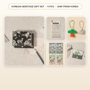
한국 전통 미니 기프트 세트 5종
자개 카드박스 4입·전통 스티커 4매·십장생 와지 4매·소나무 키링 2입·태슬 봉투 2매 · 150g
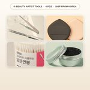
K-뷰티 아티스트 툴 4종
스패츌러&포켓·밀착 쿠션 에어퍼프 2P·극세 면봉·브러시 세척 패드 틴케이스 · 80g
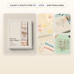
K-다꾸·인생네컷 5종
인생네컷 앨범 60매·블러 모조지 스티커·마스킹 테이프 2입·모양 스탬프 3개·소품 스티커 · 250g
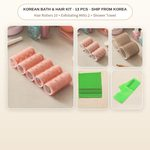
한국 목욕 리추얼 13점 키트
헤어롤 31·45·59mm 10개 + 때타월 2매 + 일체형 샤워타월 1개 · 400g
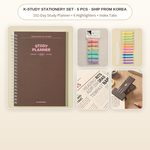
K-스터디 문구 5종 (101일 플래너)
모트모트 101일 플래너·미니 형광펜 6색·인덱스 600매·점착 메모 120매·북 스토퍼 · 350g
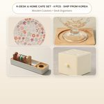
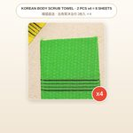
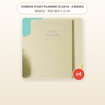
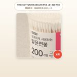
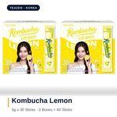
티젠 콤부차 레몬 60스틱 (2박스)S$17.86~ (18,414원~)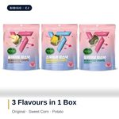
비비고 김스낵 400g (40g×10봉)S$18.27~ (18,836원~)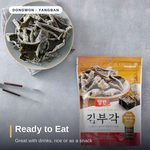
동원 양반 김부각 3팩S$21.90 · 22,579원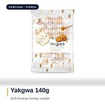
전통과자 3종세트 286gS$24.90 · 25,672원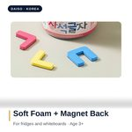
다이소 한글자석 50pcsS$13.90~ (14,331원~) +15.9%약삼립 미니꿀약과 140gS$10.90 · 11,238원C솔라C 비타민캔디 20TS$8.89~ (9,166원~)패스팟패치 72pcsS$7.51~ (7,743원~)달ICONIC 2027 데스크 캘린더S$15.95~ (16,444원~)SG는 8개국 중 유일하게 초기 등록분(간식·한글자석·달력)이 함께 판매 중입니다. T1+ 스터디 세트만 마진이 기준선(+15%) 아래(+10~12%)라 광고·바우처에서 제외돼 있고, 나머지 신상 8세트는 전부 +15% 이상입니다. 가격은 11/29 정가 조정 예약 전 값이며, 이후 변동분은 다음 회차에 갱신합니다.
thumbs/)에 함께 올렸습니다. 신상 17개 리스팅은 11/22 등록분, SG 초기 9종 가격은 11/18~22 기록값입니다.| 국가 | 라이브 |
|---|---|
| SG 싱가포르 | 59개 |
| PH 필리핀 | 46개 |
| MY 말레이시아 | 47개 |
| VN 베트남 | 42개 |
| TW 대만 | 46개 |
| TH 태국 | 29개 |
| MX 멕시코 | 28개 |
| BR 브라질 | 25개 |
방문자(8개국)
2명
PV(8개국)
2회
클릭(8개국)
0건
주문·매출(8개국)
0건 · ₩0
pc_stats.json) — PH uv 1·pv 1 · TH uv 1·pv 1(SG·TW·MY·VN·MX·BR 0 · hour_buckets 6~7 · generated_at 07:57:38 KST · 쿠키 ok) · 클릭·주문·매출 0 · 08:24:42 8개국 40/40 재장전(pc_boost.json code 0 40건·0원) → 해제 12:24:47~12:25:1497,924→144,000₫ · 번들딜 35→12종) · 원가 근거 없는 7종(53171577568 등)은 보류(사용자 결정 대기) · SG 쇼피비디오 3편 추가(총 8편·0원)했으나 8편 전부 조회·좋아요·댓글 0/0/0sales_hourly 9칸 · VN·TH 8칸 · BR 22칸 · MX 19칸), BR·MX는 11/25 저녁 값 0입니다(epoch 1795652150~1795652184). 11/25 마감은 방문 3(SG 1·VN 2)·PV 3·클릭 1·주문 0·매출 ₩0이었습니다.1795618448~1795618474). 8개국 주문 0·매출 ₩0이고 22:00 조회와 변동 0으로, 오늘 유입은 이 3명·클릭 1건이 전부입니다.1795611516~1795611543). SG Shopee Video 5편·MX Follow Prize·TW A안 미끼가 모두 주문으로 이어진 신호는 아직 0입니다.1795523505~1795523531). 8개국 주문 0·매출 ₩0으로, 18:31 4샵 전부 0에서 PH·TH에 처음 방문이 잡혔지만 클릭 1건이 전부입니다.1795512677~1795512688). 11/24 현지 자정 리셋 뒤 17시간 넘게 유입이 없고, 15:31 조회와도 변동 0입니다(17:36 인1 쇼8 실측의 TH 방문 1이 오늘 유일한 유입).msg 151) 20:33~20:35까지 노출이 이어집니다. 17:36 인1 실측은 TH 방문 1(uv 1·pv 1) 외 7개국 0이었고 18:31 4샵 퍼널도 클릭 0입니다.노출 병목 — 11/21 SG 라이브 53개 중 노출이 잡힌 상품은 신규 2종뿐이었고, 부스트를 받은 5종도 4시간 동안 클릭 0이었습니다. 상품 수(322개)보다 노출 뒤 클릭이 문제입니다. 07:03 재장전분도 11:05~11:12 해제까지 클릭 증가 0으로 끝났습니다. 11:15에 다시 40/40을 채웠고 부스트 노출 구간에 SG 첫 방문(11:40)이 잡혔지만 클릭은 끝내 0이었고, 11:15분도 15:16~15:20에 해제됐고, 15:42~15:46에 8개국 40/40을 다시 채워 SG 슬롯에는 신상 5종이 들어갔고, 그 판도 19:46 전량 해제로 끝났지만(해제 전 클릭 0), 19:48~19:51에 8개국 40/40을 다시 채워 22:00 정규 회차는 만석으로 스킵됐습니다. 19:44 재조회까지 오늘 8개국 클릭 0건(BR 1건은 11/21 현지분)이고, SG는 11/22 22시간 동안 방문 1에서 멈춰 있습니다(11/22 마감 기준 · MY가 21:11에 첫 방문 1). 부스트는 5회 연속 '노출만 만들고 클릭 0'이라 클릭 이전 단계인 썸네일·가격·제목과 상품 수 자체가 병목으로 봅니다 — 그래서 18:31에 가격을 깎지 않고 배지를 붙이는 소액 바우처(6%)를 신상에 걸었습니다. 12:00 인1 회차가 8개국 40/40을 다시 채워(0원 · 해제 16:05~16:08 · 텔레그램 119) 이번 판에서 15:11 SG 첫 방문 1이 잡혔지만 클릭은 아직 0입니다 — 16:05~16:07에 만석이 풀린 뒤 16:10~16:13에 8개국 40/40을 다시 채워(0원 · SG 신상 5종) 20:10~20:14 해제까지 노출이 이어집니다. 클릭 실측은 15:11·21:12 값(0)에서 갱신되지 않았고 앞선 판들도 모두 클릭 0으로 끝나 “노출만 만들고 클릭 0”이 반복되고 있습니다. 다만 21:12에 SG 방문 2·MY 1이 잡혀 두 샵에서 '노출→방문'은 일어났습니다 — 11/24 12:12 8개국 재실측에서도 클릭 0이라 다음 관문은 여전히 클릭입니다. 12:29~12:33 재장전분(해제 16:29~16:31)도 15:31 재실측까지 클릭 0이었고, 16:20 회차가 채운 판(해제 20:33~20:35)에서 17:36 TH 방문 1이 잡혔지만 클릭으로 이어지지 않았습니다 — 11/24는 네 샵 방문이 사실상 0(TH만 1)인 채 17시간 넘게 지났습니다.
SYGLV15 3%
✓ SYGLV25 4%
✓ SYGLV40 5%
✓ 신상 바우처 SYGLNEW06 6% — TW 8·SG 5·MX 2종 (18:31 · 비용 0원)
SYGLNB15 — S$15 이상 S$1.50 OFF · 50매 (22:28~12/31 · 0원)✓ TW SYGLNB25 — NT$300 이상 NT$25 OFF · 50매 (22:45~ · 0원)✓ MX SYGLNB30 — MX$400 이상 MX$30 OFF · 50매 · Shop Voucher (23:00~ · 0원)✓ 상품 상세 영상 11건 — T4·S1·T3·A안·S2 (11~12초 · Live 유지)✓ 유튜브 BGM 쇼츠 3편 — T4 406a6bqz2wY·S1 hAcJLBI--3M·T3 SsFP4zspOSA✓ Add-on Deal 527247748514561✓ Bundle Any 2 Get 3% Off✓ Follow Prize S$2 (11/20 적용)✓ 히어로 5종 영상 업로드 (Extra Excellent)✓ 주력 2종 영상 00:16 · 속성 5/7 (11-21 13:36)✓ 전통과자 상세속성 13/16 · Samlip 오타 교정✓ 무료 부스트 09:00·13:20 40/40 → 17:41·22:00 SG 5/5 → 22:45 7개국 35/35 · 02:55 · 07:03 · 11:15 · 15:42 8개국 40/40 · 11:15분 15:16~15:20 해제 · 15:42분 19:46까지 전량 해제 확인(SG 0/5 19:44 · TW 0/5 19:46) → 19:48~19:51 8개국 40/40 재장전(해제 23:48~23:51 · 23:41 재확인 5/5 · 쿨다운 382~399초) → 23:55~23:59 40/40 재장전 · 해제 03:56~03:58 → 04:01~04:05 8개국 40/40 재장전(40건 code 0 · 0원 · 해제 08:01~08:05) → 08:00 인1 40/40 완료(0원 · 해제 12:03~12:06) → 11/24 00:20 인1 대타 40/40(해제 04:22~04:25) → 04:00 피비서 40/40(해제 08:23~08:25) → 08:26 인1 40/40(0원 · 해제 12:25~12:28) → 12:00 인1 40/40(해제 16:05~16:07) → 16:00 인2 40/40(16:10~16:13 · 해제 20:10~20:14) → 20:00 인2 40/40(20:15~20:19 · 0원 · 해제 11/24 00:15~00:18)✓ SG 부스트 후보 신상 5종 교체 (13:07 · 15:16 이후 적용)✓ TW Bundle Deal 40→41종 — T1+ 편입 (07:15)✓ 카테고리 탭 5개 · Under S$10 2번째 고정 (14:23)✓ ICONIC 달력 2종 Live — 2개 S$31.90 · 세트 S$39.90 (14:21)✓ K-POP 폴꾸 2종 Live — S$17.90 +22.9% · S$16.90 +20.2% (14:39·14:44)✓ 상세 첫 3줄 고정 5종 (비앤씨 3 · ICONIC 2)✓ 주력 5종 번들딜 편입 — 34→39종 (18:14)✓ 동영상 4종 신규 업로드 — 5종 전부 15~16초 (18:14)✓ 1번 썸네일 신뢰 배지 5종 — SHIP FROM KOREA · AUTHENTIC · 수량 (18:14)✓ 보드세트 S$26.90→S$24.90 인하 (18:14)✓ A안·S1·S2 + 단일 묶음 4건 + T4·T1+·T3 15건+ Live (22:55~03:11)✓ Bundle Deal SG 44종 · TW 41종✓ TW Follow Prize NT$20✓ TW T1+ 심사 통과 — Live 46 · 심사 0 (05:40)✓ -15% 할인 태그 11/29 예약 (경고로 취소 후)98 · 쿨다운 14,225~14,369초 → 해제 19:43~19:46), 그 결과 17:40 정규 회차는 만석으로 스킵됐고, 19:46 해제 뒤 19:48~19:51에 8개국 40/40을 다시 채워 22:00 정규 회차도 슬롯 만석으로 스킵됩니다 — 다음 실질 판은 23:48~23:51 해제 직후입니다.SYGLNEW06(6%)이 더해져 SG는 최대 10%까지 중첩되는데, 정가가 06:00 대비 올라 있어 아직 역마진은 아닙니다(10%+ 잔여) — 중첩 유지냐 4% 하향이냐는 결정 대기입니다.110), 쿨다운 14,209~14,355초로 해제는 03:56~03:58이었고 00:00 정규 회차는 만석으로 스킵됐습니다.111), 쿨다운 14,151~14,394초 → 해제 08:01~08:05였고, 08:00 인1 정규 회차가 그 해제 직후 8개국 40/40을 다시 채웠습니다(SG 신상 5종 포함 · 40건 code 0 · 0원 · 텔레그램 113 · 다음 해제 12:03~12:06).126) 11/24 00:15~00:18까지 노출이 이어지고, 그 판의 노출 구간에서 21:12 SG 방문 2·MY 1이 잡혔습니다(클릭은 0).23:00 3자 합동 마감회의 마감 — 내일(11/23) 실행 3건(쇼피 75 · 블로그 86 · 스톡 57 · 스레드 87 · 토스 80 · 크몽 77점)
— ① 스레드·토스는 인2 안대로 7슬롯(무링크 선공개 4: 09:00·12:00·18:15·23:45 / 즉시 링크 3: 07:15·15:15·21:15)로 돌리고 후부착 기준은 ‘2시간 내 조회 200+ 또는 외부 답글 2건+’에 토스 Open API 토큰 재발급·subTagId 정비를 병행합니다.SYGLNEW06·부스트·유튜브(@sy_global 09:00 고급 기능 최종 승인·직링크 개통) 관람 유지, 크몽 1·2·3호 전부 승인·판매중(11/23), 11:30 경품 설문 유지입니다.msg_id 109)에 보고했고, 회의 시각도 23:00으로 이동 반영했습니다 — 11/22 스레드 최종 6건 확정(인2 00:15: 21:15 실험 편성 저장으로 23:45 쿠파스 ③이 스킵된 원인 확인 · 00:29 회신 마감) → 오늘 09:00 토스 ①(무링크 선공개)부터 정상 가동 — 09:03 첫 슬롯 게시 → 09:22 첫 댓글 즉시 부착·남은 슬롯 원복 완료(11/23 3건 · 누적 17건)(후부착 판정 종료 · 09:34 주간 커피 할인 총정리 추가 게시)부스트 2:2:2 분담 가동 — 20:00 인2 회차 8개국 40/40 완료(20:15~20:19 · 해제 11/24 00:15~00:18) · 다음은 피비서 00:00·04:00
— 21:27 합의로 피비서 00:00·04:00 / 인1 08:00·12:00 / 인2 16:00·20:00으로 나누고, 완료 보고가 20분 안에 없으면 인2가 빈 슬롯만 대신 채우는 상호 백업(00:20·04:20·08:20·12:20·16:20·20:20)을 유지합니다.🚀-쇼피-8개국-주력상품-무료-부스트(매일 00:00·04:00 + 백업 6회)이고, 04:01~04:05 04:00 정규 회차에서 8개국 40/40을 채웠습니다(시작 8샵 0/5 · 40건 code 0 · 0원 · SG 신상 5종 · 텔레그램 111 · 기록 work/boost-8개국-2026-11-23-0400.md).113 · 다음 해제 12:03~12:06 · 12:00 인1 회차는 해제 직후 진행 · 08:20 상호 백업은 스킵) → 16:20 본체 백업 회차가 8개국 40/40을 다시 채웠고(SG 신상 5종 5/5 · 0원 · 텔레그램 msg 151) 해제는 20:33~20:35 KST입니다 — 20:00 인2 정규 회차는 해제 직후 실행합니다.인1 21:42 이마트 와우샵 × 쇼피 30조합 = 직접 픽업 1건만 조건부 · 21:45 다산 나이키 리셀 비추천
— 와우샵은 1,000~10,000원 균일가(약 60%가 2,000원 이하)·온라인 주문 불가·1만 원 상품 1인 1개 제한이고, 택배 사입(3,200원)은 전멸, 직접 픽업도 락앤락 신선용기 2,000원 → SG S$7.70(현지 S$9.90 대비 0.8x) 1건만 조건부 통과(SG 공식몰 경쟁 리스크)입니다.(즉시판매가×0.93)-4,000-매입가 ≥ 10,000원)SYGLNEW06(6%)이 기존 샵 바우처(3~5%)와 겹칠 수 있게 걸렸습니다. 실제 중첩이면 SG는 최대 10%가 되지만 06:00 대비 정가가 올라 있어 역마진은 아님(10%+ 잔여)을 인1이 확인했습니다. 그대로 둘지, 샵 바우처를 4%로 낮출지는 승용 님 가격 결정입니다SYGLNEW06 효과 판정 — TW는 18:31 즉시 적용, SG·MX는 현지 18:32·18:35 시작 — 11/29 정가 조정 없이 배지만으로 검색 목록에서 가격 매력이 보이는지가 관건입니다. 19:40·22:40 회차에서 배지 노출·클릭·장바구니 변화를 보고, 반응이 없으면 수량·최소주문금액을 조정합니다04:00 부스트 7번째 판 판정 — 해제(08:01~08:05)까지 클릭 0으로 종료 · '노출만 만들고 클릭 0' 8회 연속
— 19:48~23:48 판에 이어 04:00 판도 SG 신상 5종을 들고 4시간을 버텼지만 08:10 재실측까지 8개국 클릭 0이었습니다.@sy_global 고급 기능 — 09:00 최종 승인으로 해소 — 23:39 '대기 중'이던 상태가 09:00 인1 실측에서 '사용 설정됨'으로 확인됐고, Shorts 설명란 쇼피 링크가 클릭 가능한 하이퍼링크로 개통됐습니다(11:29 승인 메일은 cbseng18@gmail.com 계정 건). 22:08에는 BGM 쇼츠 3편(T4·S1·T3)을 추가 업로드했고 3편 모두 설명란에서 실제 <a> 링크(youtube.com/redirect) 활성화를 확인했습니다curl·Python 직접 호출과 쿠키 추출·갱신 방법을 요청했습니다. 어디까지 공유할지는 본체 판단입니다25349556068은 NT$399→449, SG 47522011237은 S$19.90→24.90을 시도했지만 진행 중인 번들딜(Any 2 3% Off)이 잠겨 수정이 거부됐습니다. 번들에서 잠시 빼고 정가를 올릴지, 현 가격을 유지할지는 승용 님 결정입니다(가격 인상은 노출·전환에 바로 영향). 8개국 구상품 Daiso 표기 216건은 14:38 정리 완료(잔존 0)AMS · 제휴 금지 — 순마진 12.1~13.9%에서 수수료 15~20%를 얹으면 적자입니다. 중단
03 · Qoo10 Japan
샵 SY GLOBAL syglobaljp · 회원번호 2000146449정예 1~5호 전부 販売中(5호 1224104483 승인)11/28 1·3·5호 품절 대체 교체 완료(1호 1085452 핑크 바인더 · 3호 1078193+1056955 · 5호 1068547+1055672+1078453+1078200)1호 흰 배경 교체 → 画像の修正 0건타임세일 3% 종료(11/27 24:00) · SHOP쿠폰 5%(405329 · ~12/26) 유지일본어 쇼츠 1~5호 전편 업로드·고정 댓글 완료1호 일본 63/110 = 57.3%(시청시간 70.5%) · 3호 264뷰 급증 · 2호 121·4호 39·5호 12입점 서류 提出書類の確認進行中 · 확인 12/02 10:00
10290951)·3호 키링 사각 파우치(1072876)·미니 사각 체크 파우치(1066705)가 온라인·반경 10km 매장 모두 품절 → 인1이 QSM 수정: 1호 1224104135 ¥3,280 → 1085452 핑크 바인더, 3호 1224104377 ¥2,980 → 1078193+1056955 파우치 2종. 대표이미지 포함 5개 상품 전부 販売中·이미지 경고 0건 검증, 새 쇼츠 2편 집 PC 순차 푸시1068539 맥세이프 카드 지갑 아이보리 ① · 1083290 서머 비즈 스트랩 키링 ③)을 빼고 전면 교체: ① 1068547 실리콘 링 홀더(아이보리) ② 1055672 로프 스트랩(베이지) ③ 1078453 비즈 스트랩(파스텔) ④ 1062445 아크릴 그립(기존 유지) ⑤ 1078200 퀼팅 미니 파우치(핑크 · 약 22×14×7cm) · 상품명·상세(セット内容/商品情報)·대표이미지(5종 콜라주 1000×1000)·중량(약 220g·포장 300g)까지 교체 → 販売中·画像の修正 0건 검증, 공개 페이지 qoo10.jp/g/1224104483 반영 확인(14:49) · 집 PC 감시 품번도 새 5종으로 갱신1224104483(K-폰꾸 ¥3,480)가 承認待ち → 販売中로 바뀌어 5/5 완료(11/26 21:18) · 11/26 1~4호 PV 각 3씩 발생画像の修正 완전 해소 — 대표이미지 테두리가 회색(#EFEFEF)이라 검색 가산점이 막혀 있던 것을 흰 배경(#FFFFFF·테두리 4% 순백 255.00 보정)으로 교체(22:20) → 確認が必要な商品 1건 → 0건 재조회 확인11/26 17:00~11/27 24:00 · 20건 · 공개 페이지 ¥3,182 등 반영) + SHOP쿠폰 5%(405329 · 카트 2,500엔↑ · 11/26~12/26 · 使用可能) · 최대 중첩 시 최저 ¥2,746(3호)로 손익분기 ¥2,130 대비 +¥616 이상 흑자 유지TNdyjIEvO_c · 2호 WuvSMqEmb88 · 3호 RDFzsWlokAY · 4호 iBxjArlg35U · 5호 LCTJZIXaXPI · 전편 고정 댓글에 Qoo10 직링크(@sy_global 고정 확인)cbseng18@gmail.com · 회원번호 2000146449(로그인은 vault qoo10.jp 저장분)提出書類の確認進行中qsm.qoo10.jp 의 모든 내부 페이지가 Seller/SellerConfirmEntry.aspx 로 리다이렉트되어 商品登録·送料管理 진입 불가 → 승인되는 시점을 매일 10:00 자동 감시해 열리는 즉시 1~5호 등록| 호수 | 상품명 | 판매가 | 원가 | 정상 순익 | 메가 순익 | 준비 상태 |
|---|---|---|---|---|---|---|
| 1호 | K-다꾸·탑꾸 5종 | ¥3,280 | 9,000원 | 8,558원 | 5,873원 | 販売中 · 흰 배경 교체 완료 · 쇼츠 공개 |
| 2호 | 다이소 산리오 문구 8종 | ¥2,980 | 9,000원 | 6,330원 | 4,117원 | 販売中 · 타임세일 3% · 쇼츠 공개 |
| 3호 | K-POP 라이브 키트 6종 | ¥2,980 | 6,300원 | 9,330원 | 6,891원 | 販売中 · 타임세일 3% · 쇼츠 공개 |
| 4호 | K-스터디 집중 5종 | ¥3,280 | 7,300원 | 10,558원 | 7,873원 | 販売中 · 타임세일 3% · 쇼츠 공개 |
| 5호 | K-폰꾸 5종 | ¥3,480 | 9,300원 | 10,044원 | 7,195원 | 販売中 · 구성 5종 교체 완료 · 쇼츠 공개 |
work/qoo10-jp/1호-다꾸세트-등록-패키지-2026-11-25.md · 2호 2호-산리오세트 · 3호 3호-케이팝키트 · 4호 4호-스터디세트 · 5호 5호-폰꾸세트(상세 필드·일본어 문안·마진 확정본)정상 순익은 정가 판매 기준, 메가 순익은 메가와리 할인 구간의 순익입니다. 5종 모두 메가 구간에서도 4,000원 이상 남는 구조라 할인을 걸어도 역마진은 없습니다. 상품별 일본어 제목·카테고리·배송가는 패키지 문서에 그대로 입력할 수 있게 정리되어 있습니다.
食品等輸入届出)·화장품제조판매업 허가(化粧品製造販売業許可) 대상이 아닌 5종만 담았습니다(올리브영 과자 5종은 규제 때문에 보류)@sy_global 일본어 쇼츠 1~5호 전편이 공개돼 있고 고정 댓글에 Qoo10 직링크가 붙어 있습니다10:00 입점 서류심사 결과 확인 예약
쇼츠 5편 일본 시청비율 확인 오늘
사입·발송 + 실물 촬영 교체
04 · Threads · Qupas · Toss
@18.1q2w3e4r30일 조회 83,159회(+6,478 · 14:08)조회한 사람 67,608 · 반응 460 · 순 팔로워 +9팔로워 33명11/28 4건 게시(09:02 ABC주스 263 · 12:01 키친타올 · 13:21·14:07 블로그 카드)07:15 던킨 405회(10:37 391 → 12:04 405)쿠팡 파트너스 클릭 27·구매 1·10,800원·수익 324원(11/28 12:05)토스 쉐어링크 11월 클릭 5·판매 0(09:50 집 PC Open API · 허용 IP 8/10 · 1.229.212.7 추가)피클 초대 댓글 누적 116건(13:23 인1 4건 포함)
DgQ7AjRkw8J+DgQ7GHykyQl) · 12:01 쿠파스 키친타올 12롤 11,440원(DgRPjNXEyem+DgRPrwnE2nG · 78자) · 13:21 스마트스토어 수수료 카드(DgRYlwWk3kT+DgRYp-nEwo5) · 14:07 크리스마스 케이크 카드 게시 완료(DgRd1r6E2FD+DgRd6ipE3Fm · 카드 이미지 1장 · 파바 12/19·뚜레쥬르 12/22 마감 비교) · 07:15 던킨 405회(10:37 391 → 12:04 405) · 11/27 호박팥차 22(부진)12:06 인사이트 · 76,681에서 +1,297 · 직전값은 11/26 21:52 76,681
30일 · 순 팔로워 +8
12:06 실측 · 팔로워 31명(순 +8)
11/28 4건(09:02 토스 ABC주스 DgQ7AjRkw8J+DgQ7GHykyQl 263회 · 12:01 쿠파스 키친타올 DgRPjNXEyem+DgRPrwnE2nG · 13:21 블로그 카드 DgRYlwWk3kT+DgRYp-nEwo5 · 14:07 크리스마스 케이크 카드 DgRd1r6E2FD+DgRd6ipE3Fm) · 11/27 4건(07:15 더벤티×네이버페이 DgOJ5rok5Un 179회 · 09:00 청우 초코파이 찰떡 8,400원 DgOWQlCk7Ov+DgOWazek-jc 152회 · 09:4x 건강검진 12/31 마감(인1) 108회 · 12:04 쿠파스 ① 페리오 치약 170g×3 3,750원 DgOq6cBk8QC+DgOrGfLE4FV) · 11/26 7건(07:15 감성커피 · 09:01 트러블패치 · 12:03 퐁퐁 주방세제 · 15:17 에브리워터 생수 · 18:15 수세미 · 20:52 국민주권의 날 DgNBxqBEytI · 20:52 세탁기·보일러 DgNCUfBk9aO) · 11/25 7건(23:45 쿠파스 ③ LUNOO 40수 수건 5장 9,800원 · DgKylACE9ka+DgKyvFWk3YI · 텔레그램 204 · 18:15 쿠파스 ② 코멧 문풍지 6,010원 · DgKMjZtk0Mw+DgKMqAkk0LH · 텔레그램 193 · 15:17 물티슈 8회) · 11/25 4건(00:45 담요 · 07:15 설빙×네이버페이 DgJAgSLE0J8 239회 · 09:02 액츠 세탁세제 DgJMjswkxul+DgJMwSbE9cT 25회 · 12:02 수세미 DgJhOVCk94T+DgJhXX_EyQ1 1회) · 11/24 4건(07:15 유플투쁠 DgGbs8jk-DH+DgGbzjBk4ry 224회 · 09:04 쪽파김치 DgGn4C1E1SR+DgGoLICkw06 119회 · 12:03 아보카도 오일 DgG8VofE2JX+DgG8eeqk9DD 100회 · 18:15 쿠파스 ② 겨울 장갑 DgHnZxpk7mM+DgHnhVPEyf6 조회 미측정) · 11/23 7건(07:15 써브웨이 × 당근페이 3,000원 즉시할인 · DgD27a0k6Qw+DgD3D5cEy8j / 09:03 토스 ① 널담 베이글 9,600원 · DgEDBofE5Hb · 09:20 첫 댓글 DgEFEjqk1KZ / 09:34 주간 커피 할인 총정리 · DgEGiZAkz-L / 12:05 쿠파스 ① 홈플래닛 LED 모니터 조명 28,500→16,730원 · DgEXzKSE8IS+DgEX87qE3Yy / 15:47 토스 ③ 쥬르본 모나카 7,900원 · DgExOj7EzaG+DgExX4kE91m / 18:15 쿠파스 ② 손난로 보조배터리 12,310원 · DgFDZM-k3yV+DgFDhgqExeJ / 23:45 쿠파스 ③ 이지하임 수면양말 8,700원 · DgFoXSekzTX+DgFodrYk3nA) · 11/22 6건(07:15 배라 · 09:00 토스 ① 생수 · 12:00 쿠파스 ① 가그린 · 15:15 토스쇼핑 ② 떡갈비 · 18:15 쿠파스 ② 빨래건조대 · 21:15 토스쇼핑 ③ 바디워시) · 11/21 8건(03:18 크몽 · 07:15 던킨 · 09:00 마카롱 · 12:04 온풍기 · 15:15 토스 ② · 18:15 쿠파스 ② · 21:15 토스 ③ · 23:45 쿠파스 ③)
DgNBxqBEytI+DgNB3WVk4pg · 블로그 224492607716) · 20:52 세탁기·보일러(DgNCUfBk9aO+DgNCYwXE4Qv · 블로그 224493001754)34.215.0.0/16·35.85.0.0/16 추가로 풀어 HTTP 200 정상(OTP 없이 처리) · 11월 누적 클릭 5·판매 0건@sy_global 국내 쿠파스 쇼츠 2편 공개(22:59) — 김애경 기모 고무장갑 5켤레 9,900원 youtube.com/shorts/35pO-Dzr94o · 애니클리어 미니 손난로 보조배터리 12,310원 youtube.com/shorts/B8N7-9PhAGM(12초 · 설명란 직링크·고정 댓글·공정위 문구 · 텔레그램 162)DgFDZM-k3yV · 첫 댓글 DgFDhgqExeJ · 단축 iUvKRREnyC · 텔레그램 125)DgHnZxpk7mM · 첫 댓글 DgHnhVPEyf6 · 단축 link.coupang.com/a/iWaawrWZwq · 18:31 공개 프로필 12m·11m · 조회 미측정)DgExOj7EzaG · 첫 댓글 DgExX4kE91m · 쉐어링크 toss.shopping/_m/tjbuLnwv · 본문 87자·무링크)DgEXzKSE8IS · 첫 댓글 DgEX87qE3Yy · 단축 iT4qPTN6Bw · 텔레그램 118)DgEGiZAkz-L)DgEDBofE5Hb · 첫 댓글 DgEFEjqk1KZ · 쉐어링크 toss.shopping/_m/rp5EKWE2+공정위 문구 · 미리보기 카드 정상 · 텔레그램 115)DgD27a0k6Qw+첫 댓글 DgD3D5cEy8j · 텔레그램 112)@sabol.kka 제외 · 스팸 경고 0)120·127)@geureonhae 감사 재답에 좋아요+1줄 답글 DgHLijHkx0n · 오늘 게시 3건 모두 외부 댓글 0)link.coupang.com/a/i0HuiVDtQa · 로켓배송 내일(토) 새벽 7시 전 도착 · 공정위 문구scheduled-actions/🛒-스레드-쿠팡-파트너스-특가-자동화/notes.md 12:00 회차 메모 · 증거 work/threads-evidence/20261127-1200/toss.shopping/_m/ZQRTJqmv · 공정위 문구 · 09:02 JSON 재확인에서 가격·품절 변동 없음toss.shopping/_m/zIw7DpB7 · 15:10 발급 · 공정위 문구 · 미리보기 카드link.coupang.com/a/iY2upr83t6 · 공정위 문구 · 본문 4줄 무이미지221toss.shopping/_m/XDNBE3zz · 공정위 문구 · 미리보기 카드214link.coupang.com/a/iXnxSjDN1M · 공정위 문구 · 미리보기 카드185toss.shopping/_m/dvEPgZjk · 공정위 문구 · 미리보기 카드178link.coupang.com/a/iWaawrWZwq · 쿠팡 파트너스 문구DgGbs8jk-DH + 첫 댓글 DgGbzjBk4rytoss.shopping/_m/5Rt6EqYh · 공정위 문구 · 미리보기 카드143link.coupang.com/a/iVIFtEQNI4 · 공정위 문구 · 미리보기 카드146DgFoXSekzTX(23:47 · 4줄 98자 · 무링크·무상품명) + 첫 댓글 DgFodrYk3nA(단축 iUSPlAQat2 · 링크 카드 · 공정위 문구)135125DgD27a0k6Qw + 첫 댓글 DgD3D5cEy8jDgEFEjqk1KZ 즉시 부착(쉐어링크 toss.shopping/_m/rp5EKWE2 + 공정위 문구 · 미리보기 카드)DgEGiZAkz-LDgCyvipE_MM(쉐어링크 toss.shopping/_m/52jjnGrA + 카드)DgCeRZxk6yBlink.coupang.com/a/iSQxgb2S9Q + 카드DgCJBmZE-xsDgCJJYjE9BE(쉐어링크 VGnmVSUn + 카드)iSpwM0S0aq + 미리보기 카드DgBgOI4EwctDgBgUlukxYR(쉐어링크 zjT3uuOd + 카드)88DgBSEOwkwR- 무링크DgBSRSUEywQ 9항목DgCyohkE34F · 첫 댓글 DgCyvipE_MM · 21:22 완료 · 조회수 미측정), 18:15 쿠파스 ② 빨래건조대(본문 DgCeJkwE3tT · 첫 댓글 DgCeRZxk6yB · 21:21 93회), 15:15 토스쇼핑 ② 떡갈비(본문 DgCJBmZE-xs · 첫 댓글 DgCJJYjE9BE · 21:21 84회), 07:15 배라 아메리카노 1+1(본문 DgBSEOwkwR- · 첫 댓글 DgBSRSUEywQ · 21:21 200회), 09:00 토스 ① 스파클 생수(본문 DgBgOI4Ewct · 첫 댓글 DgBgUlukxYR · 21:21 47회), 12:00 쿠파스 ① 가그린 제로(본문 DgBy94Jk5o5 · 첫 댓글 iSpwM0S0aq · 21:21 6회로 최저).27
클릭
1
구매
324
원 수익
전환율
3.70%
클릭 27 → 구매 1 (+8)
구매 상품
오뚜기 흰밥
10,800원
11/28 12:05 집계 — 클릭 27(+3) · 구매 1 · 매출 ₩10,800 · 수익 324원 · 전환율 3.70%(구매는 11/20 오뚜기 흰밥 · 최근 업데이트 2026.11.28). 11/27 11:51 클릭 24에서 +3 늘었고 구매·수익은 그대로입니다. 11/25 21 → 11/26 19 → 11/27 24 → 11/28 27로 집계 시점마다 클릭만 갱신 중입니다. 11/24 21:30 집계 — 클릭 19(+4) · 구매 1 · 매출 ₩10,800 · 수익 324원 · 전환율 5.26%. 18:26 인1 재확인 당시 18에서 클릭만 +1 늘었고 구매·수익은 그대로입니다. 11/23 12:06 실측 — 클릭 18(+3) · 구매 1 · 매출 ₩10,800 · 수익 324원 · 전환율 5.56%(구매는 11/20 오뚜기 흰밥). 11/22 12:05 클릭 15에서 11/23 12:06에 18로 +3 늘었고, 18:26 인1 재확인에서도 클릭 18·구매 1·매출 10,800원·수익 324원으로 같습니다(쿠팡 파트너스 2차 인증 통과·자동 로그인 세션 저장). 11/22 당일분과 23:45 쿠파스 ③(스윗홈 납작 멀티탭)은 전일자 집계 방식이라 11/23 16:00 이후 반영됩니다.
오늘 클릭
0건
11월 누적 클릭
1건
11/19 발생
발급 링크
9건
전부 ACTIVE
판매·수익
0원
11/21 10:00:56 집계 기준 오늘 마카롱 링크 포함 클릭 0건·판매 0건. 발급 링크 9건 모두 ACTIVE 상태입니다.
11/23 23:45 쿠파스 ③ 이지하임 4켤레 수면양말 세트
— 정가 19,800→8,700원(56%↓ · 쿠폰 적용 시 8,500원)DgFoXSekzTX(23:47 · 4줄 98자 · 무링크·무상품명·무해시태그) + 첫 댓글 DgFodrYk3nA(단축 link.coupang.com/a/iUSPlAQat2 · 링크 카드 · 공정위 문구)13511/23 18:15 쿠파스 ② 애니클리어 미니 조약돌 손난로 보조배터리
— 와우할인가 12,310원(일반 12,570원 · iGPB-HOT3 5,000mAh·143g · 3단계 온도조절·보조배터리 겸용 · 상품평 7,410 · 최고·좋음 90% · 로켓배송). 본문DgFDZM-k3yV + 첫 댓글 DgFDhgqExeJ에 쿠팡 단축(link.coupang.com/a/iUvKRREnyC)·공정위 문구·미리보기 카드125127 · 다음 스레드 일정 23:45 쿠파스.11/23 15:47 토스쇼핑 ③ 쥬르본 종합 모나카 550g 1박스
— 7,900원(정가 18,000원 · 56%↓ · 100g당 1,436원 · 배송비 포함 · 내일 도착 보장 · 리뷰 1,804 · 평점 4.5 · 화과자 1위). 15:15 슬롯이 크레딧 소진으로 미실행돼 복구 직후 보충 실행. 본문DgExOj7EzaG(4줄 87자) + 첫 댓글 DgExX4kE91m에 쉐어링크(toss.shopping/_m/tjbuLnwv)·공정위 문구·미리보기 카드DgEXzKSE8IS + 첫 댓글 DgEX87qE3Yy에 쿠팡 단축(link.coupang.com/a/iT4qPTN6Bw)·미리보기 카드 · 12:06 완료 보고 · 텔레그램 118 · 17:48 조회 14회(오늘 최저).DgEGiZAkz-L · 인2 09:34 완료 보고 · 17:48 조회 60회.DgEDBofE5Hb) → 09:20 첫 댓글 DgEFEjqk1KZ 즉시 부착(쉐어링크 toss.shopping/_m/rp5EKWE2 + 공정위 문구 + 미리보기 카드) · 무링크 선공개 실험을 여기서 종료 · 텔레그램 115 · 17:48 조회 150회.DgD27a0k6Qw + 상세 첫 댓글 DgD3D5cEy8j · 인2 07:19 완료 보고 · 텔레그램 112 · 17:48 조회 676회(오늘 최고).sleep 130초 고정으로 전 구간 3분 이상 간격 · 스팸 경고 0회 · 20:41 완료(인2 보고).DgCyohkE34F + 첫 댓글 DgCyvipE_MM에 쉐어링크(toss.shopping/_m/52jjnGrA)·미리보기 카드 · 21:21 인사이트·21:22 완료 보고·텔레그램 발송 · 21:44 공개 프로필에서 두 글 확인.DgCeJkwE3tT + 첫 댓글 DgCeRZxk6yB에 쿠팡 단축(link.coupang.com/a/iSQxgb2S9Q)·미리보기 카드 · 인사이트 확인·텔레그램 발송까지 18:24 완료(인2 보고 · 18:41 공개 프로필에서 두 글 다 확인).DgCJBmZE-xs + 첫 댓글 DgCJJYjE9BE에 쉐어링크(VGnmVSUn)·미리보기 카드 · 새로고침 검증·인사이트 확인·텔레그램 발송까지 15:20 완료(인2 보고).DgBy94Jk5o5 + 첫 댓글 쿠팡 단축 URL(iSpwM0S0aq)·미리보기 카드 검증 · 텔레그램 발송 · 12:40 공개 프로필에서 글 확인.DgBgOI4Ewct 링크 없음 + 첫 댓글 DgBgUlukxYR에 쉐어링크(zjT3uuOd)·미리보기 카드 · 텔레그램 88 발송 · 09:41 공개 프로필에서 두 글 다 확인.DgBSEOwkwR- 링크 없음 + 첫 댓글 DgBSRSUEywQ 9항목 · 2시간 만에 192회 · 오늘 마감.05 · Kmong
1~4호 등록 — 1·2·3호 판매중 · 4호 승인 대기(#881141 품절 재입고 가격알림 텔레그램 EXE 29,000원 · 11/27 13:43 제출 · 총 4/100)11/28 13:45 재조회 없음 — 11/27 제출 상태 유지자동응답 ON · 템플릿 3/5프로필 완성도 80%비즈머니 3,910원 → 클릭업 중지(최소 5,000원)19,000 / 9,000 / 19,000원~응답률 0% · 진행 주문 011월 수익 0원
#881141 품절 재입고 가격알림 텔레그램 프로그램(EXE)(29,000/129,000/246,000원) → 총 4/100·승인 대기 1 · 1~3호 판매중 유지신입 저장(크몽에 1년 미만 선택지 없음 · 크몽대학교·시각디자인과는 educations: [] UI 예시로 실제 등록 아님) · 자동응답 ON(문의 접수·작업과정·수정요청 3/5)my-gigs 전체 3·판매중 3·승인 전 0·비승인 0·판매중지 0(#873653 19,000원~ · #872595 9,000원 · #868582 19,000원) / seller/dashboard 등급 NEW·비즈머니 3,910원·11월 수익 0원·진행 주문 0·평균 객단가 0원·응답률 0% / 자동응답 관리 ON·템플릿 3/5 노출 중(스마트스토어·쿠팡 정산 문의 / 작업과정 / 수정사항) / 프로필 80%(프로필·인증·서비스 등록·자동응답 4항목 완료 · 루키 지원금 최대 2.5만 원 23일 남음)엑셀 70노출·4클릭·6,090원 / 엑셀 템플릿 24·0 / 엑셀·스프레드시트 카테고리 15·0 · 15:00 36노출·0클릭에서 +73노출·+4클릭) · 11/26 00:00~00:30은 2노출·0클릭·0원#335426 1·2호 연결 → 편집승인중(00:40~00:45 · 1호 #868582·2호 #872595 연결 · 0개의 서비스에 노출중 → 2개의 서비스에 노출중 · 심사 약 7영업일 · #337682는 승인 대기 유지) · 문의 0·주문 0·11월 수익 0원엑셀 27 / 엑셀 템플릿 5 / 카테고리 4 · 클릭 전부 0) · 비즈머니 10,000원 그대로(보너스 적립분 · 만료 2027-05-19) · 서비스 1·2·3호 판매중 · 포트폴리오 2건(#337682·#335426) 승인 대기#872595 클릭업(CPC) 광고 세팅 — 보너스 비즈머니 10,000원 한도 내(추가 결제 0원) · 클릭 상한 1,600원 · 키워드 엑셀·엑셀 템플릿 2개(비싼 자동 키워드 OFF) · 2026.12.01까지(잔액 소진 시 자동 중단 · 최대 6~7클릭) · 최대 2시간 내 노출 시작 · 노출·클릭 현황은 11/25 오전 확인my-gigs 전체 3 · 판매중 3 · 승인 전 0 · 비승인·판매중지 0 / seller/dashboard 진행 주문 0 · 11월 수익 0원 · 비즈머니 10,000원 · 등급 NEW · 평균 객단가 0원 · 응답률 0% · 프로필 60% · ‘첫 판매를 위한 준비를 마쳤어요’ 화면 유지)my-gigs 재확인)
크몽 문안에서 '수수료'는 금칙어라 '판매 비용/요율'로 표기합니다.
| 구성 | 가격 | 비고 |
|---|---|---|
| 기본 (단일가) | 19,000원 | 정산 엑셀 자동화 1회 |
| 맞춤 옵션 | 3종 | 필요한 항목만 선택 추가 |
| 무료 데모 | 0원 | 구매 전 선시연 |
3단 패키지(39,000 / 99,000 / 199,000원)를 19,000원 단일가로 낮추고, 범위 밖 요청은 맞춤 옵션 3종으로 분리했습니다. 옵션별 금액과 작업일은 상세 페이지 기준이며 여기서는 미집계로 둡니다.
기성 템플릿은 5,000~19,000원대에 포화, 1:1 맞춤 자동화는 49,000~299,000원대에 틈새가 있습니다. 이번 19,000원은 기성 템플릿 상단에 맞춘 진입가로, 맞춤 옵션 3종에서 수익을 회수하는 구조입니다.
서비스
정산 엑셀 통합 정리
24시간 납품
가격
9,000원
단일
상태
판매중
승인 2026.11.23
my-gigs에서 '판매중'으로 확인됐습니다(전체 3 · 판매중 3 · 승인 전 0 · 비승인·판매중지 0). 비즈머니 10,000원서비스
나라장터 입찰공고 조건 맞춤 추출
엑셀 브리핑
가격
1.9~3.9만 원
19,000 / 29,000 / 39,000원 3단
상태
판매중
승인 2026.11.23
06 · Giveaway Surveys
매일 11:30 자동 + 수시 추가누적 103건 제출(기존 70 + 유선정 님 전달 49건 반영) · 제외 24건11/27 8건 신규(강원문화재단·여성인권진흥원·한유원·농업박물관·경북나드리·울산교육청·마포구·괴산군)KOSIS 100점 · 지표누리 5문항제외 24건(이력 5 + 별도 목록 19 · 행안부 지진안전 '이미 응답' 포함)다음 정기 11/29 11:30
pc_survey_candidates.json 1순위로 다음 정기 11/28 11:30scheduled-actions/🎁-공공기관-기프티콘-설문-응모/notes.md · 다음 정기 11/28 11:30)53건
전체 제출 완료
11/25 신규 6건 추가
| 날짜 | 발표 | 경품·비고 |
|---|---|---|
| 11/24 | 강원권통일플러스센터 연말 결산 설문 | 11:45·11:56 확인 — 공지 미게시(재확인) |
| 11/25 | 행정안전부 공공 마이데이터 만족도 | 모바일 상품권 1만원 상당 300명 |
| 11/26 | 대전평생교육진흥원 웹진 · 라이브서울 만족도 | 2건 동일 발표일 |
| 11/27 | 「도시농부」 만족도 조사 | 스타벅스 아메리카노+베이글 세트 30명 · 11/25 마감 |
| 12/01 | 농식품정보누리 만족도 조사 | 홈페이지 당첨자 발표 |
| 12/04 | 국립한글박물관 웹진 퀴즈 2건 | 경품 지급 12/4~12/9 · 당첨자 개별 연락 |
07 · Miricanvas Design Hub
기존 승인 10건 유지 · 거부 3D 10건 삭제 완료(사용자 직접)신규 2D 실용 스티커 20종 심사 대기 20/20사용·수익 0건다음 확인 11/30 10:00어도비 스톡 기존분 종료(11/25 23:02 대기 1건 반려 · 신규 업로드 0)
| 묶음 | 결과 | 비고 |
|---|---|---|
| 기존 20건 | 승인 10 · 거부 10 | 승인분에 크리스마스 5종 포함 · 거부는 품질 기준 부적합 |
| 신규 20종 | 대기 20/20 | 2D 손그림 실용 스티커 · 11/23 23:37 제출 · 영업일 6~10일 |
| 일자 | 일정 | 내용 |
|---|---|---|
| 11/23 | 20종 제출 | 23:37 제출 완료 → 심사 대기 20/20 |
| 11/30 | 결과 확인 | 10:00 심사 결과 확인 |
| 11/30 이후 | 어도비 스톡 연계 | 통과분 + 대표 3~5종으로 연계 테스트 |
08 · Naver Smart Store
판매자 에스와이글로벌(사업자·간이과세자) · 스토어 smartstore.naver.com/syjungsanlab가입 승인 11/27 17:32 · 고객확인(KYC) 18:50 심사완료1호 9,900원 판매중(13901646552 · 재고 999 · 배송비 0원)스토어 상품 6개(11/28 2개 신규) · 리뷰 0네이버쇼핑 비노출 — 운영기준 위반 의심상품 검수 중(최대 3영업일 · 12/2경)1시간 주문·검수 감시 가동 중11/28 주문 0·매출 0원
769-72-00649) · 정산계좌 카카오뱅크 · 메일 181q2w3e4r@naver.com 연결13901646552 · 판매가 9,900원 · 무료배송 · 재고 999 · 리뷰 0 · 상품 페이지 정상 로드·구매 가능(11/28 09:05~09:15 확인)디지털/가전 > 소프트웨어 > 사무/회계(50001514) · 배송없음이 거부돼 직접배송(화물배달)·배송비 0원으로 등록하고 상세에 파일 전달형·청약철회 제한 고지노출중단 — 상품명 그대로 가격비교 검색 시 "검색 결과가 없습니다", 일반 키워드에도 SY정산랩 미노출 → 검수·색인 전으로 판단(최대 3영업일 · 12/2경)| 구분 | 값 | 비고 |
|---|---|---|
| 대표 상품 | 1호 | 스마트스토어·쿠팡 정산 마진 자동화 엑셀 템플릿 수수료 자동계산 |
| 상품번호 | 13901646552 | 판매가 9,900원 · 무료배송 · 재고 999 |
| 판매 상태 | 판매중 | 상품 페이지 정상 로드·구매 가능(09:05~09:15 확인) |
| 스토어 전체 | 6개 | 오늘 2개 신규 등록 · 리뷰 0 · 주문 0 |
| 네이버쇼핑 | 비노출 | 노출중단 검수 중 — 상품명 검색 결과 없음 |
| 일자 | 일정 | 내용 |
|---|---|---|
| 11/27 | 가입 승인 | 17:32 판매회원 승인 · 18:50 고객확인(KYC) 심사완료 |
| 11/28 | 상품·노출 확인 | 09:05~09:15 1호 페이지 정상 · 네이버쇼핑 검색 미노출 확인 |
| ~12/2 | 네이버쇼핑 검수 | 운영기준 위반 의심상품 검수(최대 3영업일) 결과 대기 |
| 해제 즉시 | 유입 연결 | 블로그 1편 하단에 1호 링크·안내 문구 부착 |
| 상시 | 1시간 감시 | 주문·검수 상태 변화 확인 → 새 주문 시 즉시 보고 |
확인되지 않은 수치는 지어내지 않고 '미집계 / 확인 대기'로 표기했습니다. 수익·클릭·조회는 해당 플랫폼에서 직접 확인한 값만 집계했습니다.